SpringBoot学习笔记
SpringBoot学习笔记一、 Spring Boot 入门预：必须掌握的技术：1. Spring Boot 简介背景解决的问题优点缺点2.微服务What are Microservices?单体应用微服务3.环境准备Maven设置：Idea设置4.Spring Boot HelloWorld5.Hello World 的探究1)pom文件a.父项目b.导入的依赖2)主程序类，主入口类6.使用Spring Initializer快速创建Spring Boot 项目SpringBoot学习第一步：搭建基础流程如下默认生成的Spring Boot 项目：二、Spring Boot 配置1. 配置文件2. YAML语法1）基本语法2）值的写法字面量：普通的值（数字，字符串，布尔）对象、Map(属性和值)（键值对）数组（List、Set)：附：Spring Boot单元测试3. 通过配置文件注入1) 数据绑定到基础数据类型2) 将数据绑定到类中 含配置文件与类绑定的方法3) @Value 获取值和 @ConfigurationProperties获取值的比较4) 配置文件注入值数据校验5） @PropertySource & @ImportResource4）Spring配置文件注入a. @ImportResource: 导入Spring配置文件,让配置文件里面的内容生效；b. Spring Boot 推荐给容器添加组件的方式4.配置文件占位符RandomValuePropertySource: 配置文件中可以使用随机数属性配置占位符5.Profile1）多Profile文件2）yml支持多文档块方式3）激活指定Profile6.配置文件的加载位置7.Spring Boot 外部配置加载顺序8.Spring Boot 自动配置原理配置文件能写些什么？怎么写？自动配置的原理？自动配置原理：精髓3.自动配置原理（细节）1）@Conditional派生注解（Spring注解版原生的@Conditional作用）三、Spring Boot 与日志1、日志框架2、SLF4j使用1）如何在系统中使用SLF4j2）遗留问题3）SpringBoot日志关系3.日志使用1）默认配置2）指定配置3）切换日志框架四、SpringBoot与Web开发1、使用SpringBoot2、SpringBoot对静态页面的映射规则访问静态资源第一种 导入的webjars第二种"/**"访问当前项目的任何资源欢迎页配置图标3、模板引擎引入thymeleafThymeleaf使用&语法语法规则1)、th:text 改变当前元素里面的内容2）表达式Variable Expressions: ${...} 获取变量值，OGNL;Message Expressions: #{...} 获取国际化内容Link URL Expressions: @{...} 定义URL链接Fragment Expressions: ~{...} 插入文档Literals（字面量）Text operations: （文本操作）Arithmetic operations: (数学运算)Boolean operations: (布尔运算)Comparisons and equality:(比较运算)Conditional operators:(条件运算)（三元运算符也支持）Special tokens:(特殊)4、SpringMVC自动配置7.1.1. Spring MVC Auto-configuration扩展SpringMVC全面接管SpringMVC5、如何修改SpringBoot的默认配置6、RestfulCRUD1）、设置默认访问首页2）、国际化SprigMVC的情况SpringBoot模式原理3）、登录若登录失败，需要提升失败信息使用MVC视图解析跳转会出现刷新重新提交表单的情况，为防止这种情况发生，我们可以使用重定向4）、拦截器进行登录检查为了防止他人随机访问后台管理页面，可以利用拦截器机制，做登录检查5）、CRUD-员工列表7、错误处理机制1）、SpringBoot默认的错误处理机制五、配置嵌入式Servlet容器嵌入式Servlet容器配置注册Servlet容器三大组件使用其他Servlet容器嵌入式Servlet容器自动配置原理Spring Boot 如何自动配置servlet容器我们对嵌入式容器配置的修改如何生效嵌入式Servlet容器启动原理使用外置的Servlet容器外置的Servlet容器：外面安装Tomcat——应用war包的方式打包六、数据访问1、jdbc配置配置properties效果：自动配置原理：2.使用druidDruid的简介同时Druid不仅仅是一个数据库连接池，它包括四个部分：Druid的功能所以Druid可以：配置Druid引入stater在配置文件进行配置3、整合Jpa4、整合MyBatisMyBatis原理一、Mybatis工作原理图二、工作原理解析mybatis层次图：配置引入依赖在启动类上注解——增加MapperScan注解路径执行mapper接口路径配置文件进行配置七、创建SpringBootApplication八、缓存一、统一的缓存开发规范：J2EE——JSR107二、配置八、Docker基础安装Docker
一、 Spring Boot 入门
预：必须掌握的技术：
- Spring 框架的使用经验
- 熟练使用Maven进行项目构建和依赖管理
- 熟练使用IDEA或Eclipse
1. Spring Boot 简介
背景
Spring Boot 来简化Spring 应用的开发，约定大于配置，去繁从简，明显提高开发效率
解决的问题
- Spring全家桶时代
- Spring Boot ——》J2EE一站式解决方案
- Spring Cloud -> 分布式整体解决方案（Spring技术栈）
优点
- 快速创建独立运行的Spring项目以及与主流框架集成
- 使用嵌入式Servlet容器，应用无需打成WAR包，直接使用Java -jar jar包名即可运行
- starters自动依赖与版本控制
- 大量的自动配置，简化开发，也可以修改默认值
- 无需配置XML，无需代码生成，开箱即用
- 准生产环境的运行时应用监控
- 与云计算的天然集成
缺点
入门快，精通很难
Spring Boot是对Spring 框架的再封装，若对Spring不了解，对SpringBoot的封装机制也不会很了解，Spring Boot中许多自动配置，需要我们了解Spring的API（只有在了解Spring的API后才能更精通Spring Boot
2.微服务
martin fowler详细介绍了微服务Martin Fowler:microservices
What are Microservices?
微服务是一种架构风格
提倡在开发应用时，一个应用应该是一组小型服务；可以通过HTTP的方式进行互通
单体应用
- All In One ，
- 是传统的架构，
- 优点：开发 、部署、运维要简单，
- 缺点：牵一发动全身，不适合大型应用
- 在多个服务器上复制这个单体进行扩展
微服务
- 一个微服务架构把每个功能元素放进一个独立的服务中
- 通过跨域服务器分发这些服务进行扩展，只在需要时进行扩展🏃
- 每一个功能元素都是一个可以替换和独立升级的软件单元
- 详细参照微服务文档
3.环境准备
- Spring Boot推荐使用jdk的版本：1.7及以上
- maven:3.3及以上版本
- intellij idea
- Spring Boot
Maven设置：
给maven的settings.xml配置文件的profiles标签添加
表明使用jdk1.8进行开发
1<profile>2 <id>jdk-1.8</id>3 <activation>4 <activeByDefault>true/ activeByDefault>5 <jdk>1.8</jdk>6</activation>7 <properties>8 <maven. compiler .source>1。8</maven.compiler.source>9 <maven. compi ler. target>1.8</maven.compller.target>10 <maven. compiler. compilerverslon>1.8</maven.compiler.compllerversion>11 </propert1es>12</profile>Idea设置
进入设置页面 Ctrl+Alt+S
Build,Execution,Deployment-->Build Tools-->Maven
设置maven为本地的maven， 库也为本地maven库
4.Spring Boot HelloWorld
完成一个功能：Hello，比较简单，不记了
5.Hello World 的探究
1)pom文件
a.父项目
xxxxxxxxxx61<parent>2 <groupId>org.springframework.boot</groupId>3 <artifactId>spring-boot-starter-parent</artifactId>4 <version>2.2.0.RELEASE</version>5 <relativePath/> <!-- lookup parent from repository -->6 </parent>他的父项目是
xxxxxxxxxx61<parent>2 <groupId>org.springframework.boot</groupId>3 <artifactId>spring-boot-dependencies</artifactId>4 <version>2.2.0.RELEASE</version>5 <relativePath>../../spring-boot-dependencies</relativePath>6 </parent>其中有各种依赖的版本，Spring Boot 通过此父项目真正管理Spring Boot里面的所有依赖版本（Spring Boot的依赖仲裁中心）
以后导入依赖不需要版本，（没有depenencies中依赖管理的需要自己声明版本号）
b.导入的依赖
xxxxxxxxxx41<dependency>2 <groupId>org.springframework.boot</groupId>3 <artifactId>spring-boot-starter-web</artifactId>4 </dependency>spring-boot-stater-web
spring-boot-stater:Spring Boot 场景启动器：帮我们导入了web模块正常运行的组件
Spring Boot将所有的功能都抽取出来，做成一个个的staters(启动器)，只需要在项目中引入这些启动器，相关的依赖就能自动导入
2)主程序类，主入口类
x1public class CaitApplication {34 public static void main(String[] args) {5 SpringApplication.run(CaitApplication.class, args);6 }78}@SpringBootApplication 核心注解，标注在某个类上说明这个类是Spring Boot的主配置类，Spring Boot 一个运行这个类的main方法来启动应用：
xxxxxxxxxx171({ElementType.TYPE})2(RetentionPolicy.RUNTIME)3(8 excludeFilters = {(9 type = FilterType.CUSTOM,10 classes = {TypeExcludeFilter.class}11), (12 type = FilterType.CUSTOM,13 classes = {AutoConfigurationExcludeFilter.class}14)}15)16public @interface SpringBootApplication {@SpringBootConfiguration Spring Boot 的配置类；
标注在某个类上，表示这是一个Spring Boot 的配置类
@Configuration 配置类上来标注这个注解；（Spring4.X）
- 配置类————配置文件；
@EnableAutoConfiguration 开启自动配置功能；
以前我们需要配置的东西，Spring Boot 帮我们自动配置；
@EnableAutoConfiguration告诉SpringBoot开启自动配置功能；这样自动配置才能生效
- @AutoConfigurationPackage : 自动配置包
- @Import({AutoConfigurationImportSelector.class})Spring的底层注解，给容器中导入一个组件；导入的组件有AutoConfigurationImportSelector.class
更多知识在 Spring注解版
xxxxxxxxxx71({ElementType.TYPE})2(RetentionPolicy.RUNTIME)3({AutoConfigurationImportSelector.class})7public @interface EnableAutoConfiguration {接下来从底层理解：
我们进入
xxxxxxxxxx71({ElementType.TYPE})2(RetentionPolicy.RUNTIME)3({Registrar.class})6public @interface AutoConfigurationPackage {7}@Import既然是SpringBoot 的底层注解，那Import的是什么？我们查看Registar的内容，发现这个是一个静态类
xxxxxxxxxx121static class Registrar implements ImportBeanDefinitionRegistrar, DeterminableImports {2 Registrar() {3 }45 public void registerBeanDefinitions(AnnotationMetadata metadata, BeanDefinitionRegistry registry) {6 AutoConfigurationPackages.register(registry, (new AutoConfigurationPackages.PackageImport(metadata)).getPackageName());7 }89 public Set<Object> determineImports(AnnotationMetadata metadata) {10 return Collections.singleton(new AutoConfigurationPackages.PackageImport(metadata));11 }12 }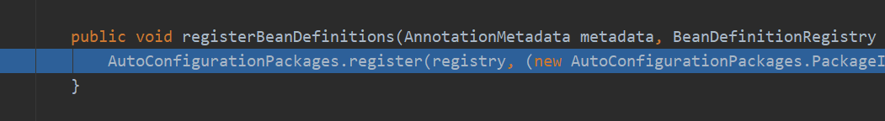
其中，这个方法registerBeanDefinitions将bean注册到容器中，我们想知道注册的到底是什么，对这行代码进行调试，
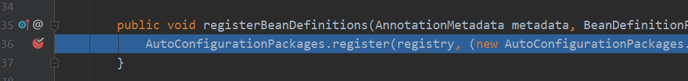
点击运行Spring Boot，
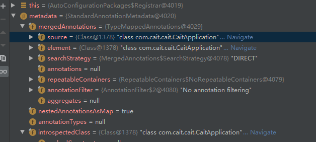
通过调试信息我们知道，这个注解源头在CaitApplication(Spring Boot 启动类)
我们选择getPackName()方法，鼠标右键选择计算表达
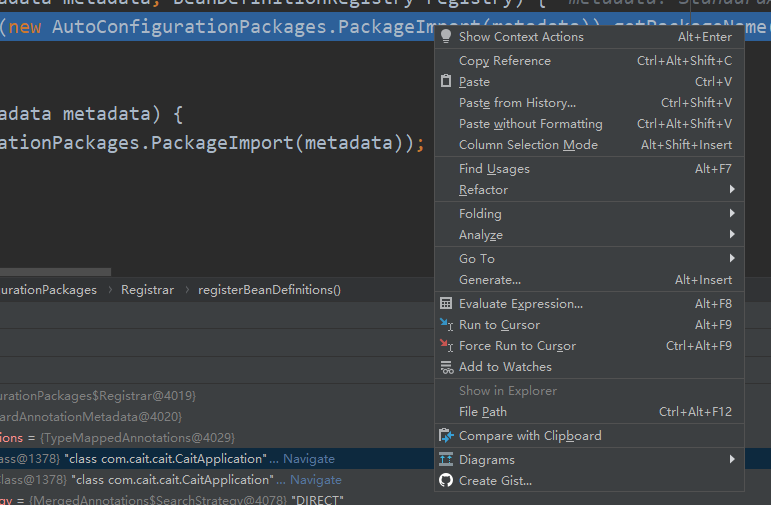
 **
**
结果证明：导入的包为com.cait.cait，也就是启动类所在的包中所有的bean。这表明，
@AutoConfigurationPackage的实质是注册启动类所在包中所有标记的类为Bean
（将主配置类所在包下以及所有子包中所有的组件扫描到Spring容器）
那么问题来了EnableAutoConfiguration中也有一个Import,这个Import又是什么作用
@Import()给容器中导入括号内组件
点进AutoConfigurationImportSelector.class
由于本人使用的Spring Boot 2.X，与1略有不同，下方为1的老师讲解
EnableAutoConfigurationImportSelector:导入哪些组件的选择器🚗
选择debug模式，查看
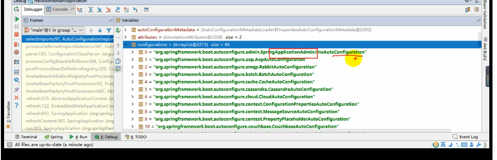
通过名字了解到是很多自动配置类(XXXAutoConfiguration)：就是给容器中导入这个场景需要的所有组件并配置好组件，使用不同的功能对应不同的配置文件
通过配置类，免去了我们手动编写配置注入功能组件的工作！！！
SpringFactoriesLoader.loadFactoryNames(EnableAutoConfiguration.class,classLoader);
Spring Boot 在启动的时候从类路径下META-INF/spring.factories中获取EnableAutoConfiguration指定的值，将这些值作为自动配置类导入到容器中，自动配置类就生效，帮我们进行自动配置工作以前我们需要自己配置的配置类，自动配置类都帮我们完成。J2EE的整体解决方案和自动配置都在spring-boot-autoconfigure-XXXX.jar中
6.使用Spring Initializer快速创建Spring Boot 项目
IDE都支持Spring Boot 的快速创建项目
SpringBoot学习第一步：搭建基础
IDEA对SpringBoot的项目支持可以说是点击就能完成基础的搭建，方便的不得了，
流程如下
1.左上角File选项，New project，选择Spring Initializr
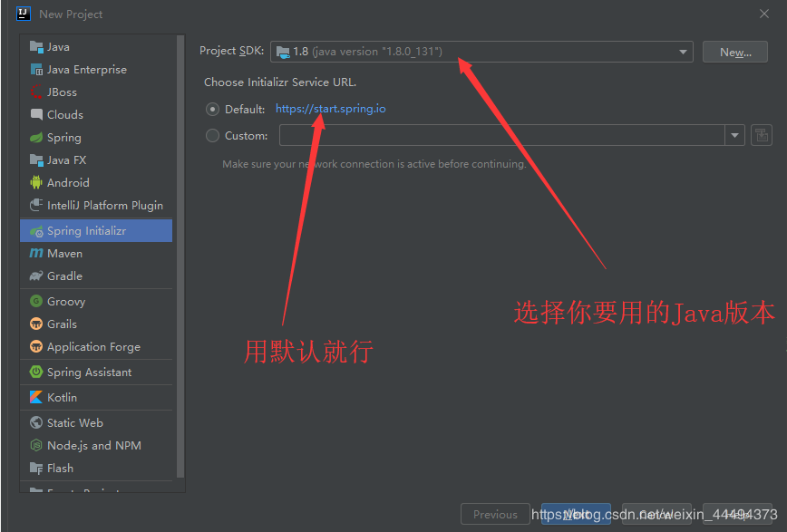
2.设置项目信息，Group 会自动创建Group文件夹，包含项目的代码；Artifact 的名字必须使用小写与下划线构成！！
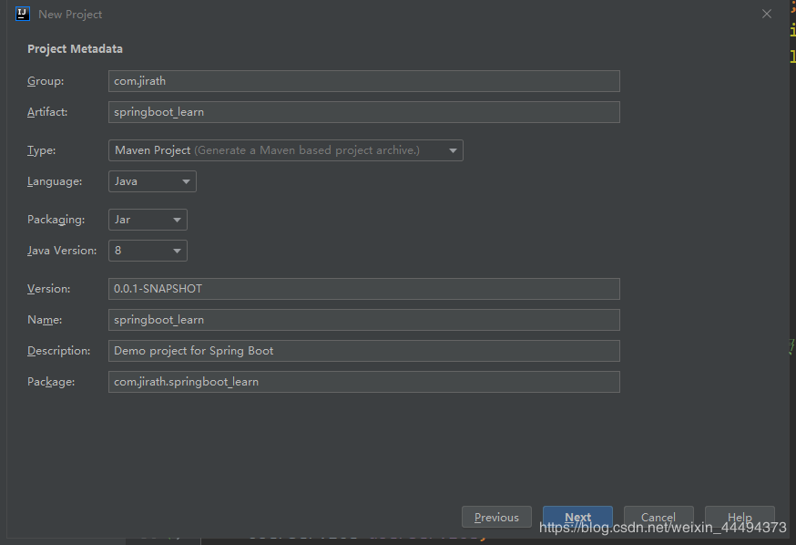
3.选择web项目，右上角可以选择SpringBoot 的版本，一定要使用relese版本（正式版），不要使用SNAPSHOT版本

4.确定project的名字与位置，名字就是项目文件夹的名字

点击finish就好啦，一个SpringBoot+Maven项目就搞定了,最后创建三个基础包，上车愉快！
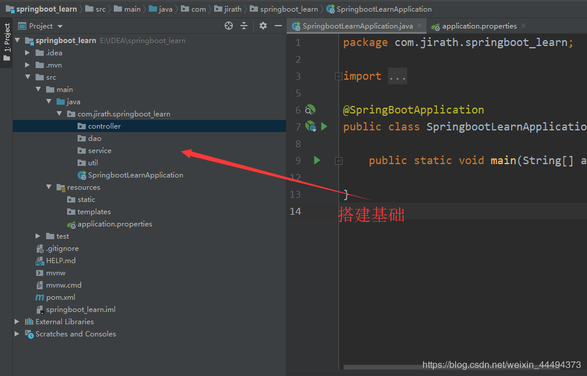
默认生成的Spring Boot 项目：
主程序已经生成，我们只需要我们自己的逻辑
resouces文件夹中目录结构
- static：保存所有的静态资源：js,css,images;
- templates:保存所有的模板页面：（Spring Boot 默认jar包嵌入式的Tomcat，默认不支持Jsp页面）；可以使用模板引擎（freemarker、thymeleaf);
- application.properties:Spring Boot 应用默认配置文件
- https://blog.csdn.net/weixin_44494373/article/details/102779187
二、Spring Boot 配置
1. 配置文件
Spring Boot 默认使用两种配置文件
- application.properties
- application.yml
配置文件的作用：修改Spring Boot自动配置的默认值；Spring Boot在底层自动配置好
YAML(YAML Ain't Markup Language )语言的文本，
- YAML A Markup Language ：是一个标记语言
- YAML isn't Markup Language ： 不是一个标记语言（XML类型标记文件）
标记语言：
- 以前的标记语言大多数使用的是 XXXX.xml
- YAML ：以数据为中心，比json、xml等更适合做配置文件
2. YAML语法
1）基本语法
K:(空格)Value 表示一对键值对（空格必备）
以空格的缩进来控制层级关系；只要是左对齐的一列数据，都是同一个层级的
xxxxxxxxxx31server2 port80813 path/hello属性与值也是大小写敏感的
2）值的写法
字面量：普通的值（数字，字符串，布尔）
key: value (中间有空格)字面直接来写；
字符串默认不用加上单引号和双引号
""：双引号不会转义字符串里面的特殊字符；特殊字符会作为本身想表达的意思
- example: "zhangsan \n list"：输出：zhangshan (换行) list
''：单引号 会转义特殊字符，特殊字符最终只是一个普通的字符串数据
- example: "zhangsan \n list"：输出：zhangshan \n list
对象、Map(属性和值)（键值对）
key: value
对象还是key: value的方式
example: create a object with propertities : lastName age
xxxxxxxxxx31friends2 lastNamezhangshan3 age22行内写法：用一行表示
xxxxxxxxxx11friendslastNamezhangshan age18数组（List、Set)：
用-值表示数组中的一个元素
xxxxxxxxxx41pets2 -cat3 -dog4 -pig行内写法
xxxxxxxxxx11petscatdogpig附：Spring Boot单元测试
可以在测试期间很方便的类似编码一样进行自动注入容器的功能
xxxxxxxxxx191package com.cait.cait;23import org.junit.jupiter.api.Test;4import org.springframework.beans.factory.annotation.Autowired;5import org.springframework.boot.test.context.SpringBootTest;67class CaitApplicationTests {910 11 要进行测试的类12 13 void contextLoads() {14 进行操作15 }1617}18193. 通过配置文件注入
1) 数据绑定到基础数据类型
@Value
String LastName;
是Spring 底层的一个注解，
对应的xml
xxxxxxxxxx31<bean class="person">2 <property name="LastName" value="字面量/${key}/#{SpEL}"></property>3</bean>
2) 将数据绑定到类中 含配置文件与类绑定的方法
注： prefix必须全部为小写，配置的类名不能使用大写！！！！！，如 subMit是错误的！！
首先 类 与 配置文件要对应，在类前注释 @ConfigurationProperties(prefix="pets")
@ConfigurationProperties 告诉SpringBoot将本类中的所有属性和配置文件中相关属性进行绑定；
perfix="pets":配置文件中，该前缀下面的所有属性，进行一一映射
若报错，点击提示，官方说明应该添加依赖
xxxxxxxxxx51<dependency>2<groupId>org.springframework.boot</groupId>3<artifactId>spring-boot-configuration-processor</artifactId>4<optional>true</optional>5</dependency>只有这个组件是容器中的组件，才能使用容器提供的@ConfigurationProperties功能
添加@Component注解加入容器组件
总结：导入配置文件处理器，以后进行配置文件操作就有提示，类中属性的名要对应，类名可以不同，加入注解@ConfigurationProperties(prefix = "属性的前缀")
xxxxxxxxxx51<dependency>2 <groupId>org.springframework.boot</groupId> 3 <artifactId>spring-boot-configuration-processor</artifactId> 4 <optional>true</optional>5</dependency>配置文件少用中文！！！
若输出为乱码，原因是idea使用的是utf8
打开Setting，搜索file encoding(文件编码)，选择UTF8,同时选择需要在运行时转译为ascii
Transparent native to ascii conversion
3) @Value 获取值和 @ConfigurationProperties获取值的比较
| 类型 | @ConfigurationProperties | @Value |
|---|---|---|
| 功能 | 批量注入配置文件中的属性 | 一个个指定 |
| 松散绑定（松散语法） | supported | unsupported，要严格对应名 |
| SpEL | unsupported | supported |
| JSR303 | supported | unsupported |
| 复杂类型封装 | supported | unsupported, only simple type is permitted |
配置文件yml于properties他们都能获取到值
- 如果说，我们只是在某个业务逻辑中需要获取一下文件中的某项值，使用@Value
- 如果单独写了一个JavaBean来匹配配置文件中的值，使用@ConfigurationProperties
4) 配置文件注入值数据校验
- 导入JSR303,在配置用的Bean上添加@Validated
- Bean中属性上添加判断注解
- @Email 就是邮箱校验
- @NotNull是非空注解
- Spring boot @Validated注解以及配合@Valid的使用
- @Validated注解使用
5） @PropertySource & @ImportResource
- @PropertySource:加载指定的配置文件（非默认的application.yml）
- 参数Value指文件，encoding指编码，也很重要！！！
注：@PropertySource默认只能支持properties文件！！！！，
解决方案：SpringBoot配置文件@PropertySource 同时支持properties文件与yaml(yml)
4）Spring配置文件注入
a. @ImportResource: 导入Spring配置文件,让配置文件里面的内容生效；
想让Spring的配置文件生效，加载进来；将@ImportResouce标注在一个类上
xxxxxxxxxx11(locations= {"classpath:bean.xml"})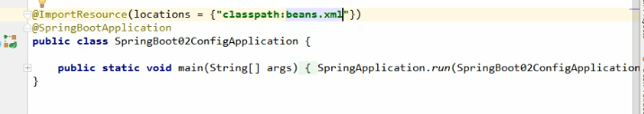
导入Spring配置文件：beans.xml并使其生效
b. Spring Boot 推荐给容器添加组件的方式
配置类=======Spring 配置文件
使用@Bean添加
xxxxxxxxxx221package com.jirath.springboot_learn.config;23import com.jirath.springboot_learn.service.HelloService;4import org.springframework.context.annotation.Bean;5import org.springframework.context.annotation.Configuration;67/**8* '@Configuratoin' point out that current object is a Configuration Class,which used to replace the Spring Configuration file before.9*/1011public class MyConfig {12/**13* add current function's returned value to the ContextContainer,14* the id of the module in this ContextContainer is the name of function;15* @return the object which used to build a Bean16*/1718public HelloService helloService(){19return new HelloService();20}21}22
4.配置文件占位符
RandomValuePropertySource: 配置文件中可以使用随机数
${random.value}、${random.int}、${random.long}、${random.int(10)}、${random.int[1024,65536]}、${random.uuid}
属性配置占位符
xxxxxxxxxx21app.name=MyApp2app.description=${app.name} is a Spring Boot application- 可以在配置文件中引用前面配置过的属性（优先级前面配置过的这里都能用）
- ${app.name:defultValue}来指定找不到属性时的默认值

- 若引用的值不存在，SpringBoot会默认将{}中间的值作为value
- 用${person.name:(defult)}可以设置默认为defult
5.Profile
在开发过程中会遇到开发和实际生产时项目的配置是不同的情况，应对这种情况，Spring设置了Profile，
Profile是Spring对不同环境提供不同配置功能的支持，可以通过激活、指定参数等方式快速切换环境
1）多Profile文件
我们在主配置文件编写的时候，文件名可以是 application-(profile).properties/yml
！！！注意，文件的profile必须在三个字符以内，否自无法作为配置文件！！
默认使用application.properties的配置：
2）yml支持多文档块方式
xxxxxxxxxx141spring2 profiles3 activedev4---5server6 port80817spring8 profilesdev9 10---11server12 port808113spring14 profilesprod
3）激活指定Profile
xxxxxxxxxx11spring.profiles.active=dev命令行：
--spring.profile.active=dev
idea测试方法

打包：
- 打开maven选项，Lifecycle->package
- 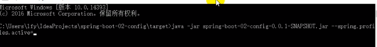
虚拟机方法：
- -Dspring-profiles.active=dev
- 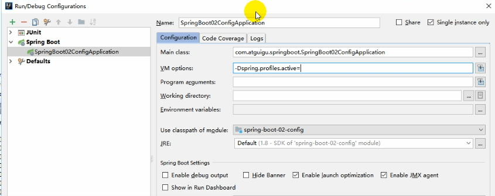
6.配置文件的加载位置
spring boot 启动会扫描以下位置的application.properties / yml 文件作为Spring Boot的默认配置文件
file:./config
file:./
以上两种是在当前项目路径下，即与src同级
classpath:/config/
classpath:/
以上是按照优先级从高到低的顺序，所有位置的文件都会被加载，
高级优先配置内容会覆盖低级优先配置相同的内容，同时满足配置互补
我们也可以通过配置spring.config.location来改变默认配置
- 项目打包好了以后，我们可以使用命令行参数的形式，启动项目的时候来指定配置文件的位置；指定配置文件和默认加载的这些配置文件共同起作用，形成互补配置
- 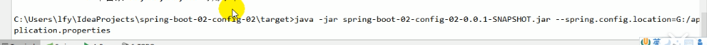
- 即可以在外部改变配置
7.Spring Boot 外部配置加载顺序
Spring Boot也可以从以下位置加载配置；优先级从高到低
优先加载带Profile，jar包外部的
- 命令行参数
- 来自java:comp/env的NDI属性
- Java系统属性(System.getProperties())
- 操作系统环境变量
- RandomValuePropertySource配置的random.*属性值
- jar包外部的application-{profile}.properties或application.yml(带spring.profile)配置文件
- jar包内部的application-{profile}.properties或application.yml(带spring.profile)配置文件
- jar包外部的application.properties或application.yml(不带spring.profile)配置文件
- jar包内部的application.properties或application.yml(不带spring.profile)配置文件
- @Configuration注解类上的@PropertySource
- 通过SpringApplication.setDefaultProperties指定的默认属性
8.Spring Boot 自动配置原理
配置文件能写些什么？怎么写？自动配置的原理？
自动配置原理：
Spring Boot启动的时候，加载主配置类，开启了自动配置功能@EnableAutoConfiguration，
@EnableAutoConfiguration的作用：
利用EnableAutoConfigurationImportSelector给容器中导入一些组件
可以查询selectImports()方法的内容；
List
configurations=getCandidateConfigurations(annotation Metadata,attributes);获取候选的配置 xxxxxxxxxx51protected List<String> getCandidateConfigurations(AnnotationMetadata metadata, AnnotationAttributes attributes) {2List<String> configurations = SpringFactoriesLoader.loadFactoryNames(this.getSpringFactoriesLoaderFactoryClass(), this.getBeanClassLoader());3Assert.notEmpty(configurations, "No auto configuration classes found in META-INF/spring.factories. If you are using a custom packaging, make sure that file is correct.");4return configurations;5}xxxxxxxxxx71public final class SpringFactoriesLoader {2public static final String FACTORIES_RESOURCE_LOCATION = "META-INF/spring.factories";3private static final Log logger = LogFactory.getLog(SpringFactoriesLoader.class);4private static final Map<ClassLoader, MultiValueMap<String, String>> cache = new ConcurrentReferenceHashMap();56private SpringFactoriesLoader() {7}扫描所有jar包类路径下 META-INF/spring.factories
把扫描到的这些文件的内容包装成properties对象
从properties中获取到EnableAutoCongratulation.class类（类名）对应的值，然后把他们添加在容器中
将类路径下 META-INF/spring.factories 里面配置的所有EnableAutoCongratulation的值加入到容器当中
位置：maven:spring-boot-autocongratulation->spring-boot-autoconfiguare-2X->META-INF->spring.factories
xxxxxxxxxx1271# Auto Configure2org.springframework.boot.autoconfigure.EnableAutoConfiguration=\3org.springframework.boot.autoconfigure.admin.SpringApplicationAdminJmxAutoConfiguration,\4org.springframework.boot.autoconfigure.aop.AopAutoConfiguration,\5org.springframework.boot.autoconfigure.amqp.RabbitAutoConfiguration,\6org.springframework.boot.autoconfigure.batch.BatchAutoConfiguration,\7org.springframework.boot.autoconfigure.cache.CacheAutoConfiguration,\8org.springframework.boot.autoconfigure.cassandra.CassandraAutoConfiguration,\9org.springframework.boot.autoconfigure.cloud.CloudServiceConnectorsAutoConfiguration,\10org.springframework.boot.autoconfigure.context.ConfigurationPropertiesAutoConfiguration,\11org.springframework.boot.autoconfigure.context.MessageSourceAutoConfiguration,\12org.springframework.boot.autoconfigure.context.PropertyPlaceholderAutoConfiguration,\13org.springframework.boot.autoconfigure.couchbase.CouchbaseAutoConfiguration,\14org.springframework.boot.autoconfigure.dao.PersistenceExceptionTranslationAutoConfiguration,\15org.springframework.boot.autoconfigure.data.cassandra.CassandraDataAutoConfiguration,\16org.springframework.boot.autoconfigure.data.cassandra.CassandraReactiveDataAutoConfiguration,\17org.springframework.boot.autoconfigure.data.cassandra.CassandraReactiveRepositoriesAutoConfiguration,\18org.springframework.boot.autoconfigure.data.cassandra.CassandraRepositoriesAutoConfiguration,\19org.springframework.boot.autoconfigure.data.couchbase.CouchbaseDataAutoConfiguration,\20org.springframework.boot.autoconfigure.data.couchbase.CouchbaseReactiveDataAutoConfiguration,\21org.springframework.boot.autoconfigure.data.couchbase.CouchbaseReactiveRepositoriesAutoConfiguration,\22org.springframework.boot.autoconfigure.data.couchbase.CouchbaseRepositoriesAutoConfiguration,\23org.springframework.boot.autoconfigure.data.elasticsearch.ElasticsearchAutoConfiguration,\24org.springframework.boot.autoconfigure.data.elasticsearch.ElasticsearchDataAutoConfiguration,\25org.springframework.boot.autoconfigure.data.elasticsearch.ElasticsearchRepositoriesAutoConfiguration,\26org.springframework.boot.autoconfigure.data.elasticsearch.ReactiveElasticsearchRepositoriesAutoConfiguration,\27org.springframework.boot.autoconfigure.data.elasticsearch.ReactiveRestClientAutoConfiguration,\28org.springframework.boot.autoconfigure.data.jdbc.JdbcRepositoriesAutoConfiguration,\29org.springframework.boot.autoconfigure.data.jpa.JpaRepositoriesAutoConfiguration,\30org.springframework.boot.autoconfigure.data.ldap.LdapRepositoriesAutoConfiguration,\31org.springframework.boot.autoconfigure.data.mongo.MongoDataAutoConfiguration,\32org.springframework.boot.autoconfigure.data.mongo.MongoReactiveDataAutoConfiguration,\33org.springframework.boot.autoconfigure.data.mongo.MongoReactiveRepositoriesAutoConfiguration,\34org.springframework.boot.autoconfigure.data.mongo.MongoRepositoriesAutoConfiguration,\35org.springframework.boot.autoconfigure.data.neo4j.Neo4jDataAutoConfiguration,\36org.springframework.boot.autoconfigure.data.neo4j.Neo4jRepositoriesAutoConfiguration,\37org.springframework.boot.autoconfigure.data.solr.SolrRepositoriesAutoConfiguration,\38org.springframework.boot.autoconfigure.data.redis.RedisAutoConfiguration,\39org.springframework.boot.autoconfigure.data.redis.RedisReactiveAutoConfiguration,\40org.springframework.boot.autoconfigure.data.redis.RedisRepositoriesAutoConfiguration,\41org.springframework.boot.autoconfigure.data.rest.RepositoryRestMvcAutoConfiguration,\42org.springframework.boot.autoconfigure.data.web.SpringDataWebAutoConfiguration,\43org.springframework.boot.autoconfigure.elasticsearch.jest.JestAutoConfiguration,\44org.springframework.boot.autoconfigure.elasticsearch.rest.RestClientAutoConfiguration,\45org.springframework.boot.autoconfigure.flyway.FlywayAutoConfiguration,\46org.springframework.boot.autoconfigure.freemarker.FreeMarkerAutoConfiguration,\47org.springframework.boot.autoconfigure.gson.GsonAutoConfiguration,\48org.springframework.boot.autoconfigure.h2.H2ConsoleAutoConfiguration,\49org.springframework.boot.autoconfigure.hateoas.HypermediaAutoConfiguration,\50org.springframework.boot.autoconfigure.hazelcast.HazelcastAutoConfiguration,\51org.springframework.boot.autoconfigure.hazelcast.HazelcastJpaDependencyAutoConfiguration,\52org.springframework.boot.autoconfigure.http.HttpMessageConvertersAutoConfiguration,\53org.springframework.boot.autoconfigure.http.codec.CodecsAutoConfiguration,\54org.springframework.boot.autoconfigure.influx.InfluxDbAutoConfiguration,\55org.springframework.boot.autoconfigure.info.ProjectInfoAutoConfiguration,\56org.springframework.boot.autoconfigure.integration.IntegrationAutoConfiguration,\57org.springframework.boot.autoconfigure.jackson.JacksonAutoConfiguration,\58org.springframework.boot.autoconfigure.jdbc.DataSourceAutoConfiguration,\59org.springframework.boot.autoconfigure.jdbc.JdbcTemplateAutoConfiguration,\60org.springframework.boot.autoconfigure.jdbc.JndiDataSourceAutoConfiguration,\61org.springframework.boot.autoconfigure.jdbc.XADataSourceAutoConfiguration,\62org.springframework.boot.autoconfigure.jdbc.DataSourceTransactionManagerAutoConfiguration,\63org.springframework.boot.autoconfigure.jms.JmsAutoConfiguration,\64org.springframework.boot.autoconfigure.jmx.JmxAutoConfiguration,\65org.springframework.boot.autoconfigure.jms.JndiConnectionFactoryAutoConfiguration,\66org.springframework.boot.autoconfigure.jms.activemq.ActiveMQAutoConfiguration,\67org.springframework.boot.autoconfigure.jms.artemis.ArtemisAutoConfiguration,\68org.springframework.boot.autoconfigure.groovy.template.GroovyTemplateAutoConfiguration,\69org.springframework.boot.autoconfigure.jersey.JerseyAutoConfiguration,\70org.springframework.boot.autoconfigure.jooq.JooqAutoConfiguration,\71org.springframework.boot.autoconfigure.jsonb.JsonbAutoConfiguration,\72org.springframework.boot.autoconfigure.kafka.KafkaAutoConfiguration,\73org.springframework.boot.autoconfigure.ldap.embedded.EmbeddedLdapAutoConfiguration,\74org.springframework.boot.autoconfigure.ldap.LdapAutoConfiguration,\75org.springframework.boot.autoconfigure.liquibase.LiquibaseAutoConfiguration,\76org.springframework.boot.autoconfigure.mail.MailSenderAutoConfiguration,\77org.springframework.boot.autoconfigure.mail.MailSenderValidatorAutoConfiguration,\78org.springframework.boot.autoconfigure.mongo.embedded.EmbeddedMongoAutoConfiguration,\79org.springframework.boot.autoconfigure.mongo.MongoAutoConfiguration,\80org.springframework.boot.autoconfigure.mongo.MongoReactiveAutoConfiguration,\81org.springframework.boot.autoconfigure.mustache.MustacheAutoConfiguration,\82org.springframework.boot.autoconfigure.orm.jpa.HibernateJpaAutoConfiguration,\83org.springframework.boot.autoconfigure.quartz.QuartzAutoConfiguration,\84org.springframework.boot.autoconfigure.rsocket.RSocketMessagingAutoConfiguration,\85org.springframework.boot.autoconfigure.rsocket.RSocketRequesterAutoConfiguration,\86org.springframework.boot.autoconfigure.rsocket.RSocketServerAutoConfiguration,\87org.springframework.boot.autoconfigure.rsocket.RSocketStrategiesAutoConfiguration,\88org.springframework.boot.autoconfigure.security.servlet.SecurityAutoConfiguration,\89org.springframework.boot.autoconfigure.security.servlet.UserDetailsServiceAutoConfiguration,\90org.springframework.boot.autoconfigure.security.servlet.SecurityFilterAutoConfiguration,\91org.springframework.boot.autoconfigure.security.reactive.ReactiveSecurityAutoConfiguration,\92org.springframework.boot.autoconfigure.security.reactive.ReactiveUserDetailsServiceAutoConfiguration,\93org.springframework.boot.autoconfigure.security.rsocket.RSocketSecurityAutoConfiguration,\94org.springframework.boot.autoconfigure.security.saml2.Saml2RelyingPartyAutoConfiguration,\95org.springframework.boot.autoconfigure.sendgrid.SendGridAutoConfiguration,\96org.springframework.boot.autoconfigure.session.SessionAutoConfiguration,\97org.springframework.boot.autoconfigure.security.oauth2.client.servlet.OAuth2ClientAutoConfiguration,\98org.springframework.boot.autoconfigure.security.oauth2.client.reactive.ReactiveOAuth2ClientAutoConfiguration,\99org.springframework.boot.autoconfigure.security.oauth2.resource.servlet.OAuth2ResourceServerAutoConfiguration,\100org.springframework.boot.autoconfigure.security.oauth2.resource.reactive.ReactiveOAuth2ResourceServerAutoConfiguration,\101org.springframework.boot.autoconfigure.solr.SolrAutoConfiguration,\102org.springframework.boot.autoconfigure.task.TaskExecutionAutoConfiguration,\103org.springframework.boot.autoconfigure.task.TaskSchedulingAutoConfiguration,\104org.springframework.boot.autoconfigure.thymeleaf.ThymeleafAutoConfiguration,\105org.springframework.boot.autoconfigure.transaction.TransactionAutoConfiguration,\106org.springframework.boot.autoconfigure.transaction.jta.JtaAutoConfiguration,\107org.springframework.boot.autoconfigure.validation.ValidationAutoConfiguration,\108org.springframework.boot.autoconfigure.web.client.RestTemplateAutoConfiguration,\109org.springframework.boot.autoconfigure.web.embedded.EmbeddedWebServerFactoryCustomizerAutoConfiguration,\110org.springframework.boot.autoconfigure.web.reactive.HttpHandlerAutoConfiguration,\111org.springframework.boot.autoconfigure.web.reactive.ReactiveWebServerFactoryAutoConfiguration,\112org.springframework.boot.autoconfigure.web.reactive.WebFluxAutoConfiguration,\113org.springframework.boot.autoconfigure.web.reactive.error.ErrorWebFluxAutoConfiguration,\114org.springframework.boot.autoconfigure.web.reactive.function.client.ClientHttpConnectorAutoConfiguration,\115org.springframework.boot.autoconfigure.web.reactive.function.client.WebClientAutoConfiguration,\116org.springframework.boot.autoconfigure.web.servlet.DispatcherServletAutoConfiguration,\117org.springframework.boot.autoconfigure.web.servlet.ServletWebServerFactoryAutoConfiguration,\118org.springframework.boot.autoconfigure.web.servlet.error.ErrorMvcAutoConfiguration,\119org.springframework.boot.autoconfigure.web.servlet.HttpEncodingAutoConfiguration,\120org.springframework.boot.autoconfigure.web.servlet.MultipartAutoConfiguration,\121org.springframework.boot.autoconfigure.web.servlet.WebMvcAutoConfiguration,\122org.springframework.boot.autoconfigure.websocket.reactive.WebSocketReactiveAutoConfiguration,\123org.springframework.boot.autoconfigure.websocket.servlet.WebSocketServletAutoConfiguration,\124org.springframework.boot.autoconfigure.websocket.servlet.WebSocketMessagingAutoConfiguration,\125org.springframework.boot.autoconfigure.webservices.WebServicesAutoConfiguration,\126org.springframework.boot.autoconfigure.webservices.client.WebServiceTemplateAutoConfiguration127
每一个这样的XXXAutoConfrigulation类都是容器的一个组件，都加入到容器中；用他们来做自动配置；
每一个自动配置类进行自动配置功能；
以HttpEncodingAutoConfiguration（Http编码自动配置）为例解释自动配置原理；
xxxxxxxxxx351(2proxyBeanMethods = false3)//表示这是一个配置类，与之前编写配置文件一样，也可以给容器中添加组件4({HttpProperties.class})//启用ConfigurationProperties功能:将配置文件中对应的值和HttpEncodingProperties绑定起来;并把 HttpProperties 加入到Spring的ioc容器中来5(6type = Type.SERVLET7)//考虑webapp，Spring底层@Conditional注解，根据不同的条件，如果满足指定的条件，整个配置类就会生效; 判断当前应用是否是web应用，如果是，当前配置类才生效8({CharacterEncodingFilter.class})//判断当前项目有没有这个类 CharacterEncodingFilter ：SpringMVC进行乱码解决的过滤器9(10prefix = "spring.http.encoding",11value = {"enabled"},12matchIfMissing = true13)//判断配置文件中是否存在某个配置spring.http.encoding.enabled ; 如果不存在判断也是成立的，即使配置文件中不配值，也是默认生效的；14public class HttpEncodingAutoConfiguration {15/**16*他已经和SpringBoot的配置文件映射了17*18**/19private final Encoding properties;2021//只有一个有参构造器的情况下，参数的值就会从容器中拿22public HttpEncodingAutoConfiguration(HttpProperties properties) {23this.properties = properties.getEncoding();24}2526//给容器中添加组件，这个组件的某些值需要从properties中获取2728public CharacterEncodingFilter characterEncodingFilter() {29CharacterEncodingFilter filter = new OrderedCharacterEncodingFilter();30filter.setEncoding(this.properties.getCharset().name());//获取编码31filter.setForceRequestEncoding(this.properties.shouldForce(org.springframework.boot.autoconfigure.http.HttpProperties.Encoding.Type.REQUEST));32filter.setForceResponseEncoding(this.properties.shouldForce(org.springframework.boot.autoconfigure.http.HttpProperties.Encoding.Type.RESPONSE));33return filter;34}35}- 根据当前不同条件判断，决定这个配置类是否生效？
- SpringBoot1.X中属性在HttpEncodingProperties中可以查看，2.X中无注释
- 一旦这个配置类生效；这个配置就会给容器中添加各种组件；这些组件的属性是从对应的properties中获取的，这些类中的每一个属性又是和配置文件绑定的
所有配置文件中能配置的属性都是在xxxxProperties类中封装着
xxxxxxxxxx231//2// Source code recreated from a .class file by IntelliJ IDEA3// (powered by Fernflower decompiler)4//56package org.springframework.boot.autoconfigure.http;78import java.nio.charset.Charset;9import java.nio.charset.StandardCharsets;10import java.util.Locale;11import java.util.Map;12import org.springframework.boot.context.properties.ConfigurationProperties;1314(15prefix = "spring.http"16)//从配置文件中获取指定的值和bean的属性进行绑定17public class HttpProperties {18private boolean logRequestDetails;19private final HttpProperties.Encoding encoding = new HttpProperties.Encoding();2021//...................22}23xxxxxxxxxx61#我们能配置的属性都来源于这个功能的properties类2spring.http.encoding.enabled=true3#字符集4spring.http.encoding.charset=utf-85#强制编码 请求响应必须为UTF86spring.http.encoding.force=true
精髓
SpringBoot启动会加载大量自动配置类
我们看我们需要的功能有没有SpringBoot默认写好的自动配置类；
我们再来看这个自动配置类中到底配置了哪些组件；
- 只要我们要用的组件存在，我们就不需要配置
给容器中自动配置类添加组件的时候，会从properties类中获取某些属性，我们就可以在配置文件中指定这些属性的值
xxxxxAutoConfiguration:自动配置类；
给容器中添加组件
xxxxproperties:封装配置文件中相关属性；
for example:
- 全局搜索相关自动配置类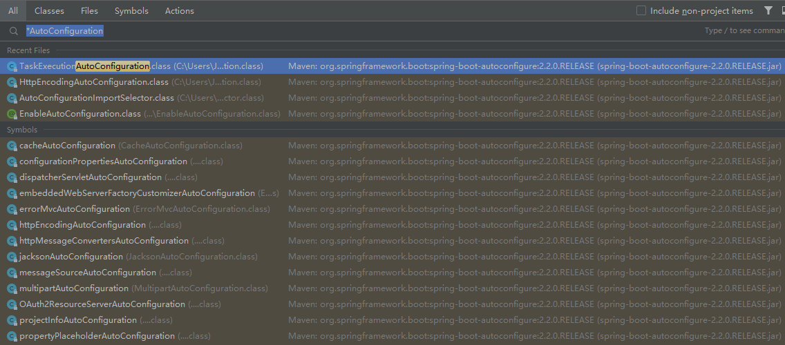
- 点击查看XXXXProperties，类中属性即为可以配置的属性

3.自动配置原理（细节）
1）@Conditional派生注解（Spring注解版原生的@Conditional作用）
作用：必须是@Conditional指定的条件成立，才给容器中添加组件，配置配里面的内容才生效
| @Conitional扩展注解 | 作用（判断是否满足当前指定条件） |
|---|---|
| @ConditionalOnJava | 系统的Java版本是否符合要求 |
| @ConditionalOnBean | 容器中存在指定Bean |
| @ConditionalOnMissingBean | 容器中不存在指定Bean |
| @ConditionalOnExpression | 满足SpEl表达式指定 |
| @ConditionalOnClass | 系统中有指定的类 |
| @ConditionalOnMissingClass | 系统中没有指定的类 |
| @ConditionalOnSingleCandidate | 容器中只有一个指定的Bean，或者这个Bean是首选Bean |
| @ConditionalOnProperty | 系统中指定的属性是否有指定的值 |
| @ConditionalOnResource | 类路径下是否存在指定资源文件 |
| @ConditionalOnWebApplication | 当前是web环境 |
| @ConditionalOnNotWebApplication | 当前不是web环境 |
| @ConditionalOnJndi | JNDI存在指定项 |
自动配置类必须在一定条件下生效🌶
我们怎么知道那些自动配置类生效？
在配置文件中编写
xxxxxxxxxx21#开启SpringBoot的debug2debug=true我们可以通过启用debug=true属性；来让控制台打印自动生成报告，这样我们就可以很方便的知道哪些自动配置类生效
Positive matches: 自动配置类启用的
Negative matches: 未匹配到
三、Spring Boot 与日志
1、日志框架
小张在开发一个大型系统；
System.out.println("");将关键信息打印在控制台；老板希望去掉；又想要用
做成一个框架记录系统运行时的信息；
高大上的几个功能：
- 异步模式
- 自动归档
- XXXX
卸载老框架，换新框架，重新修改相关API;（很麻烦）
JDBC---数据库驱动启发；
- 写了一个接口层：日志门面（日志的一个抽象层）；logging-abstract.jar
- 给项目中导入具体的日志实现就行了；我们之前的日志框架都是实现的抽象层
市面上的日志框架
JUL , JCL , Jboss-logging , logback , log4j , log4j2 , slf4j
| 日志门面（日志抽象层） | 日志实现 |
|---|---|
| log4j、JUL(java.util.logging)、log4j2、logback |
左边选一个门面（抽象层）、右边来选一个实现
- Jboss 太复杂 JCL 最后一次更新在2014年
- SLF4j log4j logback出自同一人
- Log4j2 Apache公司的全新日志框架
日志门面：SLF4J;
日志实现：Logback > log4j
SpringBoot ：底层是Spring框架，Spring框架默认使用是JCL
SpringBoot 选用SLF4j和logback
2、SLF4j使用
1）如何在系统中使用SLF4j
以后在开发的时候，日志记录方法的调用，不应该来直接调用日志的实现类，二傻调用日志抽象层里面的方法；
给系统里面导入slf4j的jar和logback的实现jar
xxxxxxxxxx91import org.slf4j.Logger;2import org.slf4j.LoggerFactory;34public class HelloWorld {5 public static void main(String[] args) {6 Logger logger = LoggerFactory.getLogger(HelloWorld.class);7 logger.info("Hello World");8 }9}slf4j使用的情况

SELF4j关联了logback日志框架后的正确使用情况
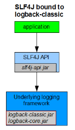
调用SELF4j的接口，SELF4j调用底层日志的jar包
使用log4j时，系统会使用适配层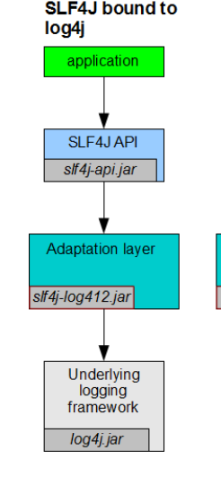
通过适配层将两者关联
2）遗留问题
for example:a情况（slf4j+logback):Spring (commons-logging)、Hibernate( jBOSS-logging)、Mybatis...
统一日志记录，即使 是别的框架，和我一起统一使用slf4j进行输出

- 将系统中其他日志框架先排出去
- 用中间包替换所有的日志框架
- 导入slf4j其他的实现
----------------------SpringBoot就是这么实现的
3）SpringBoot日志关系
使用idea创建，选择web，默认携带self4j+logback
在pom文件中，选择导入的依赖，右键，选择Diagrams->Show Dependencies,idea就可以用树状图的方式展现依赖之间的关系，按住alt即可放大镜查看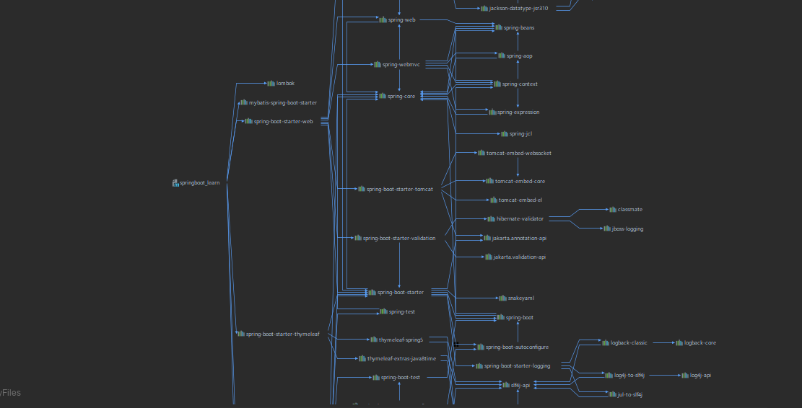
xxxxxxxxxx41<dependency>2 <groupId>org.springframework.boot</groupId>3 <artifactId>spring-boot-starter</artifactId>4 </dependency>SpringBoot 使用他来做日志功能
xxxxxxxxxx61<dependency>2 <groupId>org.springframework.boot</groupId>3 <artifactId>spring-boot-starter-logging</artifactId>4 <version>2.2.0.RELEASE</version>5 <scope>compile</scope>6 </dependency>

总结：
使用logback记录日志
把其他日志转为slf4j
导入抽象层
中间替换包（偷梁换柱）
如果我们要引入其他框架，一定要把这个框架的默认日志依赖移除
- 新版本的Spring不再使用commons-logging,所以新的Spring Boot中没有去除该框架
SpringBoot能自动适配所有的日志，而且底层使用的是slf4j+logback的方式记录日志，引入其他框架的时候，只需要把这个框架依赖的日志框架排除掉
3.日志使用
1）默认配置
SpringBoot 默认帮我们配置好了日志；
xxxxxxxxxx161 //记录器2 org.slf4j.Logger logger= org.slf4j.LoggerFactory.getLogger(getClass());34 5 void contextLoads() {6 //日志的级别7 //由低到高 trace debug info warn error8 //可以调整需要输出的日志级别，日志就只会在这个级别的更高级别生效9 logger.trace("这是trance日志");10 logger.debug("这是debug日志");11 //SpringBoot 默认使用的是info级别,没有指定级别的就用SpringBoot默认规定的级别：root级别(info)12 logger.info("这是info日志");13 logger.warn("这是warn日志");14 logger.error("这是error日志");15 }16SpringBoot修改日志默认配置
path和file都存在，file为主
xxxxxxxxxx111logging.level.com.jirath=trace2#在当前磁盘下新建Spring和log文件夹：使用spring.log作为默认文件3logging.file.path=/spring/log4#不指定路径就在当前项目下生成日志5#logging.file.name=springboot.log6#可以指定完整路径7logging.file.name=E:/springboot.log8#在控制台输出的日志格式9logging.pattern.console================%n%d{yyyy-MM-dd} [%thread] %-5level %logger{50} - %msg%n10#指定文件中日志输出格式11logging.pattern.file=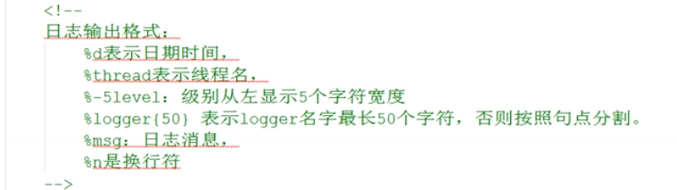
SpringBoot 关于日志的其他默认设置在哪里？
位于
spring-boot-2.2.0.RELEASE.jar!/org/springframework/boot/logging/logback/中
打开即为SpringBoot针对LogBack的配置封装。
for example: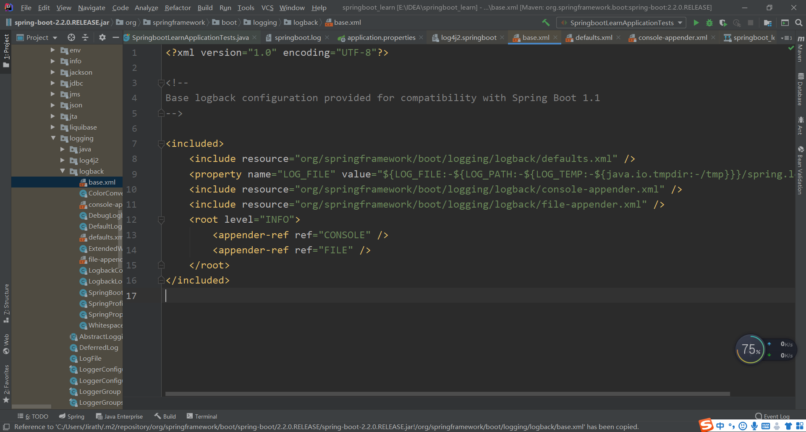
其中，SpringBoot将默认级别(root)设置为了info
在配置文件中配置的属性会被一个名为LoggingApplicationListener（单击配置文件配置项即可查看）相似的类接收
LoggingApplicationListener同时与一个LoggingSystemProperties（在logback桶目录下）的类对应在这里获取输入的值，进行解析
在base.xml中SpringBoot针对控制台与文件输出有分别的定义，如图
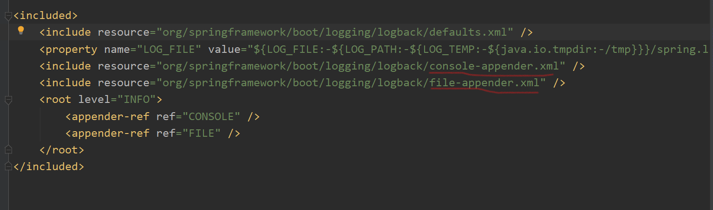
在文件默认配置中，SpringBoot同时设置了文件在最大数值，当超出数值，日志就会自动分文件记录，如：log1,log2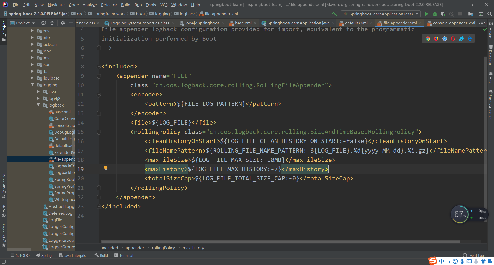
2）指定配置
在实际使用时，同时会遇到其他功能的需求，自动归档等等等等，
要想使用自己的配置文件，Spring.io中在特性下有一章节专门讲述了SpringBoot配置默认日志的方法：在Spring目录中放logback.xml即可
给类路径下放上每个框架自己的配置文件即可：SpringBoot就不再使用默认配置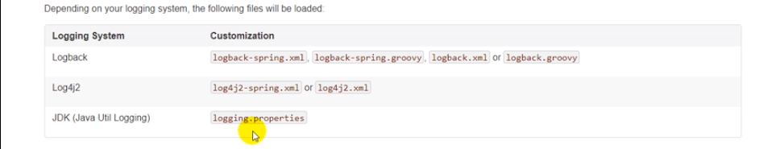
Spring Boot includes a number of extensions to Logback that can help with advanced configuration. You can use these extensions in your logback-spring.xml configuration file.
logback.xml:直接被日志框架识别
logback-spring.xml：日志就不直接加载日志配置项，由SpringBoot解析日志配置，就可以使用SpringBoot的高级Profile功能
xxxxxxxxxx31<springProfile name="dev">2 <!--可以指定某段配置只在某个环境下生效-->3</springProfile>3）切换日志框架
例子：使用log4j
- 打开依赖关系图，选择logback,exclude,将logback排除
- 去除log4j-over-slf4j(将log4j替换为slf4j的包)
- 导入slf4j-log4j12(无需写版本)，会自动的导入log4j
- 运行
但是，此行为无意义，log4j因为表现不理想，原作开发了logback;
使用其他日志框架：
- 排除stater-logging
- 引入stater-log4j2
四、SpringBoot与Web开发
Thymeleaf、web定制、容器定制
1、使用SpringBoot
- 创建SpringBoot应用，选中我们需要的模块；
- SpringBoot已经默认将这些场景布置好，只需要在配置文件中指定少量配置就可以运行起来；
- 自己编写业务代码；
自动配置原理？
这个场景SpringBoot帮我们配置了什么？能不能修改？能不能扩展？......
- XXXXAutoConfiguration:帮我们给容器中自动配置组件
- 在Spring-boot-autoconfigure中找到web模块
- 自动配置类在其中
- XXXProperties：配置类来封装配置文件的内容
2、SpringBoot对静态页面的映射规则
在WebMvcAutoConfiguration中
访问静态资源
第一种 导入的webjars
xxxxxxxxxx181public void addResourceHandlers(ResourceHandlerRegistry registry) {2 if (!this.resourceProperties.isAddMappings()) {3 logger.debug("Default resource handling disabled");4 } else {5 Duration cachePeriod = this.resourceProperties.getCache().getPeriod();6 CacheControl cacheControl = this.resourceProperties.getCache().getCachecontrol().toHttpCacheControl();7 if (!registry.hasMappingForPattern("/webjars/**")) {8 this.customizeResourceHandlerRegistration(registry.addResourceHandler(new String[]{"/webjars/**"}).addResourceLocations(new String[]{"classpath:/META-INF/resources/webjars/"}).setCachePeriod(this.getSeconds(cachePeriod)).setCacheControl(cacheControl));9 }1011 String staticPathPattern = this.mvcProperties.getStaticPathPattern();12 if (!registry.hasMappingForPattern(staticPathPattern)) {13 this.customizeResourceHandlerRegistration(registry.addResourceHandler(new String[]{staticPathPattern}).addResourceLocations(WebMvcAutoConfiguration.getResourceLocations(this.resourceProperties.getStaticLocations())).setCachePeriod(this.getSeconds(cachePeriod)).setCacheControl(cacheControl));14 }1516 }17 }18由上方代码，所有/webjars/**,下的请求都会去classpath:/META-INF/resources/webjars/中寻找资源
- webjars：以jar包的方式引入静态资源；
- webJars
- 将常用的前端框架给了一个Maven依赖的方式
- 选好要使用的版本，在pom文件中引入即可
- 引入后在jar包中，设置中显示隐藏文件夹即可打开，符合映射规则
代码中同时设置了缓存时间，缓存时间可以在resourceProperties中设置
xxxxxxxxxx11Duration cachePeriod = this.resourceProperties.getCache().getPeriod();xxxxxxxxxx61(2prefix = "spring.resources",3ignoreUnknownFields = false4)5public class ResourceProperties {6//可以设置与静态资源有关的参数，缓存时间
第二种"/**"访问当前项目的任何资源


第二种规则："/**"访问当前项目的任何资源，
xxxxxxxxxx41 String staticPathPattern = this.mvcProperties.getStaticPathPattern();2 if (!registry.hasMappingForPattern(staticPathPattern)) {3 this.customizeResourceHandlerRegistration(registry.addResourceHandler(new String[]{staticPathPattern}).addResourceLocations(WebMvcAutoConfiguration.getResourceLocations(this.resourceProperties.getStaticLocations())).setCachePeriod(this.getSeconds(cachePeriod)).setCacheControl(cacheControl));4 }进入getResoutceLocations
xxxxxxxxxx61static String[] getResourceLocations(String[] staticLocations) {2 String[] locations = new String[staticLocations.length + SERVLET_LOCATIONS.length];3 System.arraycopy(staticLocations, 0, locations, 0, staticLocations.length);4 System.arraycopy(SERVLET_LOCATIONS, 0, locations, staticLocations.length, SERVLET_LOCATIONS.length);5 return locations;6 }查看代码是从其他方法中引入了参数（与1版本不同）
返回查看参数的来源
xxxxxxxxxx11getStaticLocations
xxxxxxxxxx21private static final String[] CLASSPATH_RESOURCE_LOCATIONS = new String[]{"classpath:/META-INF/resources/", "classpath:/resources/", "classpath:/static/", "classpath:/public/"};2得总结
"/**"访问当前项目的任何资源（静态资源文件夹）都会在下方的文件夹中找内容
- "classpath:/META-INF/resources/",
- "classpath:/resources/"，非默认的resources,而是新建的resources文件夹
- "classpath:/static/"
- "classpath:/public/",(默认无，需要新建)
- "/":当前项目的路径
欢迎页配置
xxxxxxxxxx61 public WelcomePageHandlerMapping welcomePageHandlerMapping(ApplicationContext applicationContext, FormattingConversionService mvcConversionService, ResourceUrlProvider mvcResourceUrlProvider) {3 WelcomePageHandlerMapping welcomePageHandlerMapping = new WelcomePageHandlerMapping(new TemplateAvailabilityProviders(applicationContext), applicationContext, this.getWelcomePage(), this.mvcProperties.getStaticPathPattern());4 welcomePageHandlerMapping.setInterceptors(this.getInterceptors(mvcConversionService, mvcResourceUrlProvider));5 return welcomePageHandlerMapping;6 }xxxxxxxxxx71private Optional<Resource> getWelcomePage() {2 String[] locations = WebMvcAutoConfiguration.getResourceLocations(this.resourceProperties.getStaticLocations());3 return Arrays.stream(locations).map(this::getIndexHtml).filter(this::isReadable).findFirst();4 }5private Resource getIndexHtml(String location) {6 return this.resourceLoader.getResource(location + "index.html");7 }静态资源文件夹下所有index.html页面：被"/**"映射
图标
所有的**/favicon.ico都是在静态资源环境下找；
同时静态资源的位置是可以改变的
spring.resources.static-location=位置
3、模板引擎
之前多使用jsp页面，可以很方便的嵌入数据等，但SpringBoot 使用嵌入式的tomcat,不支持jsp页面，只能支持HTML,
JSP、Velocity、Freemarker、Thymeleaf；
模板引擎的作用：在写页面时，将一些数据与渲染数据的模板结合输出，JSP与其他的模板引擎都是这一原理
SpringBoot推荐的Thymeleaf；
语法更简单，功能更强大；
引入thymeleaf
xxxxxxxxxx101- ````xml2<dependency>3<groupId>org.springframework.boot</groupId>4<artifactId>spring-boot-starter-thymeleaf</artifactId>5</dependency>6````78- 详情见SpringBoot官网文档910- 布局功能的支持程序 thymeleaf3主程序 layout2以上版本
Thymeleaf使用&语法
xxxxxxxxxx471- 在AutoConf...中有配置类，打开properties有默认自动配置项23- ````java4private static final Charset DEFAULT_ENCODING;5public static final String DEFAULT_PREFIX = "classpath:/templates/";6public static final String DEFAULT_SUFFIX = ".html";7private boolean checkTemplate = true;8private boolean checkTemplateLocation = true;9private String prefix = "classpath:/templates/";10private String suffix = ".html";11private String mode = "HTML";12private Charset encoding;13private boolean cache;14private Integer templateResolverOrder;15private String[] viewNames;16private String[] excludedViewNames;17private boolean enableSpringElCompiler;18private boolean renderHiddenMarkersBeforeCheckboxes;19private boolean enabled;20private final ThymeleafProperties.Servlet servlet;21private final ThymeleafProperties.Reactive reactive;22//只要我们把HTML文件放在classpath:/templates/，thymeleaf就能自动渲染23//同时可以在配置文件中修改配置24````2526- [thymeleaf官网](https://www.thymeleaf.org/)2728- 2930- 现代化java服务端的模板引擎3132- 3334- 使用3536````ht37导入开启thymeleaf的语法空间，开启语法提示38<html lang="en" xmlns:th="http://www.thymeleaf.org">39````4041````java42@RequestMapping("/html")43public String testHtml(Map<String,Object> map){44map.put("hello", "这是Controller中返回的话");45return "testPage";46}47````
xxxxxxxxxx141````html2<!DOCTYPE html>3<html lang="en" xmlns:th="http://www.thymeleaf.org">4<head>5<meta charset="UTF-8">6<title>test</title>7</head>8<body>9<h1>这是一个测试文字</h1>10<!--将div里面的文本内容设置为,可以替换静态的信息-->11<div th:text="${hello}">这是静态的语句</div>12</body>13</html>14````
语法规则
详见官方文档：Attribute Precedence
使用${AttributeName}取值
1)、th:text 改变当前元素里面的内容
th:任意html属性 替换原生属性的值
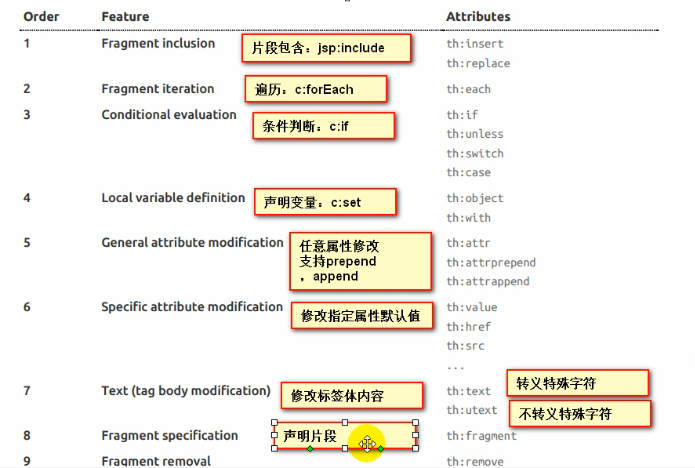
2）表达式
详见thymeleaf文档 expression
Simple expressions:(表达式语法)
Variable Expressions: ${...} 获取变量值，OGNL;
获取对象的属性、调用方法
使用内置的基本对象
- #ctx : the context object.
- #vars: the context variables.
- #locale : the context locale.
- #request : (only in Web Contexts) the HttpServletRequest object.
- #response : (only in Web Contexts) the HttpServletResponse object.
- #session : (only in Web Contexts) the HttpSession object.
- #servletContext : (only in Web Contexts) the ServletContext object.例子：附录中更详细
Established locale country: <span th:text="${#locale.country}">US</span>.
内置的一些工具对象 #execInfo : information about the template being processed. #messages : methods for obtaining externalized messages inside variables expressions, in the same way as they would be obtained using #{…} syntax. #uris : methods for escaping parts of URLs/URIs #conversions : methods for executing the configured conversion service (if any). #dates : methods for java.util.Date objects: formatting, component extraction, etc. #calendars : analogous to #dates , but for java.util.Calendar objects. #numbers : methods for formatting numeric objects. #strings : methods for String objects: contains, startsWith, prepending/appending, etc. #objects : methods for objects in general. #bools : methods for boolean evaluation. #arrays : methods for arrays. #lists : methods for lists. #sets : methods for sets. #maps : methods for maps. #aggregates : methods for creating aggregates on arrays or collections. #ids : methods for dealing with id attributes that might be repeated (for example, as a result of an iteration). 用法详见附录中的示例 Selection Variable Expressions: *{...} 变量的选择表达式，与${}在性质上是一样的，补充：配合th:object 使用
- 例子：附录中更详细
Message Expressions: #{...} 获取国际化内容
Link URL Expressions: @{...} 定义URL链接
Fragment Expressions: ~{...} 插入文档
Literals（字面量）
- Text literals: 'one text' , 'Another one!' ,…
- Number literals: 0 , 34 , 3.0 , 12.3 ,…
- Boolean literals: true , false
- Null literal: null
- Literal tokens: one , sometext , main ,…
Text operations: （文本操作）
- String concatenation: +
- Literal substitutions: |The name is ${name}|
Arithmetic operations: (数学运算)
- Binary operators: + , - , * , / , %
- Minus sign (unary operator):
Boolean operations: (布尔运算)
- Binary operators: and , or
- Boolean negation (unary operator): ! , not
Comparisons and equality:(比较运算)
- Comparators: > , < , >= , <= ( gt , lt , ge , le )
- Equality operators: == , != ( eq , ne )
Conditional operators:(条件运算)（三元运算符也支持）
- If-then: (if) ? (then)
- If-then-else: (if) ? (then) : (else)
- Default: (value) ?: (defaultvalue)
Special tokens:(特殊)
- No-Operation: _ 不做处理
xxxxxxxxxx91OGNL的例子2/* * Access to properties using the point (.). Equivalent to calling property getters. */ 3${person.father.name}4/* * Access to properties can also be made by using brackets ([]) and writing * the name of the property as a variable or between single quotes. */ 5${person['father']['name']}6/* * If the object is a map, both dot and bracket syntax will be equivalent to * executing a call on its get(...) method. */ ${countriesByCode.ES} ${personsByName['Stephen Zucchini'].age}7/* * Indexed access to arrays or collections is also performed with brackets, * writing the index without quotes. */ ${personsArray[0].name}8/* * Methods can be called, even with arguments. */ ${person.createCompleteName()} ${person.createCompleteNameWithSeparator('-')}94、SpringMVC自动配置
7.1.1. Spring MVC Auto-configuration
Spring Boot provides auto-configuration for Spring MVC that works well with most applications.
The auto-configuration adds the following features on top of Spring’s defaults:
以下是SpringBoot 对SpringMVC的默认配置：
Inclusion of
ContentNegotiatingViewResolverandBeanNameViewResolverbeans.- 自动配置ViewResolver(视图解析器:根据方法的返回值得到视图对象(View),视图对象决定如何渲染（转发？重定向？）)
- 如何定制：我们可以自己给容器中添加一个视图解析器；自动的将其整合进来；
Support for serving static resources, including support for WebJars (covered later in this document)). 静态资源文件夹路径和webjars
Automatic registration of
Converter,GenericConverter, andFormatterbeans.- 自动注册了
Converter,GenericConverter, andFormatterbeans Converter转换器：SpringMVC中类型转换使用ConverterFormatter格式化器：2017-11-3-->Date，不同国家的表示不同，按照一定格式转化过来为转化器- SpringBoot2.2.0与1版本不同，格式化器通过此方法注入容器
xxxxxxxxxx91/**2在配置文件中配置日期格式化的规则3*/45public FormattingConversionService mvcConversionService() {6WebConversionService conversionService = new WebConversionService(this.mvcProperties.getDateFormat());7this.addFormatters(conversionService);8return conversionService;//日期格式化组件9}- 自动注册了
Support for
HttpMessageConverters(covered later in this document).HttpMessageConverters:SpringMVC中转换Http请求和响应的；User类->jsonHttpMessageConverters是从容器中确定的；获取所有的HttpMessageConverter;- 自己给容器中添加HttpMessageConverter,只需要将自己的组件注册容器中(@Bean、@Component)
Automatic registration of
MessageCodesResolver(covered later in this document).定义错误代码生成规则Static
index.htmlsupport. 静态首页访问Custom
Faviconsupport (covered later in this document).Automatic use of a
ConfigurableWebBindingInitializerbean (covered later in this document).从容器中取出，故可以自己配一个ConfigurableWebBindingInitializer来替换默认的- 作用：初始化web数据绑定器WebDataBinder
- 把请求数据绑定到JavaBean中
org.springframework.boot.autoconfigure.web :web中所有的自动配置
If you want to keep Spring Boot MVC features and you want to add additional MVC configuration (interceptors, formatters, view controllers, and other features), you can add your own @Configuration class of type WebMvcConfigurer but without @EnableWebMvc. If you wish to provide custom instances of RequestMappingHandlerMapping, RequestMappingHandlerAdapter, or ExceptionHandlerExceptionResolver, you can declare a WebMvcRegistrationsAdapter instance to provide such components.
If you want to take complete control of Spring MVC, you can add your own @Configuration annotated with @EnableWebMvc.
扩展SpringMVC
参考：
If you want to keep Spring Boot MVC features and you want to add additional MVC configuration (interceptors, formatters, view controllers, and other features), you can add your own @Configuration class of type WebMvcConfigurer but without @EnableWebMvc. If you wish to provide custom instances of RequestMappingHandlerMapping, RequestMappingHandlerAdapter, or ExceptionHandlerExceptionResolver, you can declare a WebMvcRegistrationsAdapter instance to provide such components.
编写一个配置类(@Configuration),是WebMvcConfigurer类型；不能标注@EnableWebMvc
- WebMvcConfigurer是SpringMVC的自动配置类
- 在做其他自动配置的时候会导入@Import(EnableWebMvcConfiguration.class)
- EnableWebMvcConfiguration继承DelegationWebMvcConfiguration，从容器中获取所有的WebMvcConfigure一起来起作用
- 容器中所有的WebMvcConfigure都会起作用
- 我们的配置类也会起作用
全面接管SpringMVC
If you want to take complete control of Spring MVC, you can add your own @Configuration annotated with @EnableWebMvc.
SpringBoot对MVC的自动配置不再需要，所有内容都是自己来配；
add your own @Configuration annotated with @EnableWebMvc.
效果：所有的SpringMVC的自动配置都失效了
原理：
- 自动配置类是@ConditionOnMissingBean判断是否自动配置的
- 使用了这个注解将引入该类，导致判断为容器中已经存在配置类，自动配置失效
源码的原理与SpringMVC中相同，不再编写
5、如何修改SpringBoot的默认配置
模式
1）由于SpringBoot大量使用了Condition注解，SpringBoot在自动配置很多组件的时候，先看容器中有没有这个组件（通常为用户自己配置的@Bean@Component）,若没有，再进行自动配置；如果有些组件可以有多个（如ViewResolver）将用户的配置和自己的默认组合起来
2）在SpringBoot 中会有非常多的xxxxConfigure帮助我们进行扩展配置
3）在SpringBoot中会有很多的xxxCustomizer帮助我们进行定制配置
6、RestfulCRUD
1）、设置默认访问首页
将页面命名为index.html置于"classpath:/META-INF/resources/", "classpath:/resources/", "classpath:/static/", "classpath:/public/"目录下
编写Handler拦截路径"/"和"/index.html"返回到指定的视图
在一个
WebMvcConfigurerAdapter（已经过时）中编写一个addViewControllers完成一个视图映射新方法继承WebMvcConfigurer接口，需要@Bean注册到容器（@Configuration中包含了@Bean)
xxxxxxxxxx331package com.jirath.springboot_learn.config;23import com.jirath.springboot_learn.service.HelloService;4import org.springframework.context.annotation.Bean;5import org.springframework.context.annotation.Configuration;6import org.springframework.web.servlet.config.annotation.ViewControllerRegistry;7import org.springframework.web.servlet.config.annotation.WebMvcConfigurer;89/**10* '@Configuration' point out that current object is a Configuration Class,which used to replace the Spring Configuration file before.11*/1213public class MyConfig implements WebMvcConfigurer {14/**15* add current function's returned value to the ContextContainer,16* the id of the module in this ContextContainer is the name of function;17* @return the object which used to build a Bean18*/1920public HelloService helloService(){21return new HelloService();22}2324/**25在这里编写一个ViewController26*/2728public void addViewControllers(ViewControllerRegistry registry) {29registry.addViewController("/").setViewName("index");30registry.addViewController("/index.html").setViewName("index");31}32}33
2）、国际化
SprigMVC的情况
- 编写国际化配置文件
- 使用ResourceBundleMessageSource管理国际化资源文件
- 在页面使用fmt:message取出国际化内容
SpringBoot模式
步骤：
编写国际化配置文件，抽取页面需要显示的国际化信息
- 新建文件夹，新建文件 页面_国家代码.properties
- idea可以自动识别国际化配置文件，可以快速新建文件，如下图
- 在idea的国际化视图中编写属性
SpringBoot自动配置好了管理国际化资源文件的组件
MessageSourceAutoConfiguration
xxxxxxxxxx981(2proxyBeanMethods = false3)4(5name = {"messageSource"},6search = SearchStrategy.CURRENT7)8(-2147483648)9({MessageSourceAutoConfiguration.ResourceBundleCondition.class})1011public class MessageSourceAutoConfiguration {12private static final Resource[] NO_RESOURCES = new Resource[0];1314public MessageSourceAutoConfiguration() {15}161718(19prefix = "spring.messages"20)21public MessageSourceProperties messageSourceProperties() {22return new MessageSourceProperties();23}242526public MessageSource messageSource(MessageSourceProperties properties) {27ResourceBundleMessageSource messageSource = new ResourceBundleMessageSource();28if (StringUtils.hasText(properties.getBasename())) {29//设置国际化管理的基础名（去掉语言，国家代码的）30messageSource.setBasenames(StringUtils.commaDelimitedListToStringArray(StringUtils.trimAllWhitespace(properties.getBasename())));31}3233if (properties.getEncoding() != null) {34messageSource.setDefaultEncoding(properties.getEncoding().name());35}3637messageSource.setFallbackToSystemLocale(properties.isFallbackToSystemLocale());38Duration cacheDuration = properties.getCacheDuration();39if (cacheDuration != null) {40messageSource.setCacheMillis(cacheDuration.toMillis());41}4243messageSource.setAlwaysUseMessageFormat(properties.isAlwaysUseMessageFormat());44messageSource.setUseCodeAsDefaultMessage(properties.isUseCodeAsDefaultMessage());45return messageSource;46}4748//我们的配置文件可以直接放在类路径下叫messages.properties;49protected static class ResourceBundleCondition extends SpringBootCondition {50private static ConcurrentReferenceHashMap<String, ConditionOutcome> cache = new ConcurrentReferenceHashMap();5152protected ResourceBundleCondition() {53}5455public ConditionOutcome getMatchOutcome(ConditionContext context, AnnotatedTypeMetadata metadata) {56String basename = context.getEnvironment().getProperty("spring.messages.basename", "messages");57ConditionOutcome outcome = (ConditionOutcome)cache.get(basename);58if (outcome == null) {59outcome = this.getMatchOutcomeForBasename(context, basename);60cache.put(basename, outcome);61}6263return outcome;64}6566private ConditionOutcome getMatchOutcomeForBasename(ConditionContext context, String basename) {67Builder message = ConditionMessage.forCondition("ResourceBundle", new Object[0]);68String[] var4 = StringUtils.commaDelimitedListToStringArray(StringUtils.trimAllWhitespace(basename));69int var5 = var4.length;7071for(int var6 = 0; var6 < var5; ++var6) {72String name = var4[var6];73Resource[] var8 = this.getResources(context.getClassLoader(), name);74int var9 = var8.length;7576for(int var10 = 0; var10 < var9; ++var10) {77Resource resource = var8[var10];78if (resource.exists()) {79return ConditionOutcome.match(message.found("bundle").items(new Object[]{resource}));80}81}82}8384return ConditionOutcome.noMatch(message.didNotFind("bundle with basename " + basename).atAll());85}8687private Resource[] getResources(ClassLoader classLoader, String name) {88String target = name.replace('.', '/');8990try {91return (new PathMatchingResourcePatternResolver(classLoader)).getResources("classpath*:" + target + ".properties");92} catch (Exception var5) {93return MessageSourceAutoConfiguration.NO_RESOURCES;94}95}96}97}98
去页面获取国际化的值；
- 利用thymeleaf模板引擎，标准语法中的messages
- #{}获取国际化信息，#{配置的文件头(默认为message).属性}


原理
国际化Locale(区域信息对象)；LocaleResolver(获取区域信息对象)
默认的区域信息解析器，根据请求头的信息获取Locale来确定，进行国际化
xxxxxxxxxx171 3 (4 prefix = "spring.mvc",5 name = {"locale"}6 )7 public LocaleResolver localeResolver() {8 //若为固定的就返回固定的，若不是国定的，就从请求头中求得信息，9 if (this.mvcProperties.getLocaleResolver() == org.springframework.boot.autoconfigure.web.servlet.WebMvcProperties.LocaleResolver.FIXED) {10 return new FixedLocaleResolver(this.mvcProperties.getLocale());11 } else {12 AcceptHeaderLocaleResolver localeResolver = new AcceptHeaderLocaleResolver();13 localeResolver.setDefaultLocale(this.mvcProperties.getLocale());14 return localeResolver;15 }16 }17自订的区域信息解析器（使用参数完成区域信息的解析）
- 编写类实现LocaleResolver接口，将这个类注册到容器中

可以直接在Configuration中编写一个内部类完成
3）、登录
编写一个用户登录的接口，方法与SpringMVC大致相同，在参数前加@RequestParam("")可以确定该参数对应的数据名，且该参数必备。
idea在运行期间不会修改代码
让编写的页面修改实时生效：
禁用thymeleaf缓存
xxxxxxxxxx21#禁用thymeleaf缓存2spring.thymeleaf.cache=false
页面修改完成后，使用ctrl+F9重新编译
若登录失败，需要提升失败信息
使用thymeleaf模板引擎中的判断标签
使用thymeleaf中对象的引入，引入String对象，利用String对象中的isEmpty判断是否存在该信息（错误信息）
xxxxxxxxxx11<p style="color: red" th:text="${mesg}" th:if="${not #strings.isEmpty(msg)}"></p>
使用MVC视图解析跳转会出现刷新重新提交表单的情况，为防止这种情况发生，我们可以使用重定向
- 在跳转的地址前加 redirect: 表示重定向
- 在视图解析器中添加解析器，将上方重定向的视图绑定到所需的页面
4）、拦截器进行登录检查
为了防止他人随机访问后台管理页面，可以利用拦截器机制，做登录检查
即利用SpringMVC中的HandlerInterceptor
- 新建类实现HandlerInterceptor接口
- 重写preHandle方法，利用request对象读取session信息
- 在webMvcConfigurater配置类中添加拦截器addInterceptors

5）、CRUD-员工列表
要求：
1）、RestfulCRUD：CRUD满足Rest风格
| 操作类型 | 普通CRUD（根据url来区分操作） | RestfulURL |
|---|---|---|
| 查询 | getEmp | emp----GET |
| 添加 | addEmp?xxx | emp----POST |
| 修改 | updateEmp?xxx | emp/{id}----PUT |
| 删除 | deleteEmp?id=1 | emp/{id}----DELETE |
实验设计：
| 操作 | 请求URL | 请求方式 |
|---|---|---|
| 查询所有员工 | emps | GET |
| 查询某个员工（来到修改页面） | emps/{id} | GET |
| 来到添加页面 | emp | GET |
| 添加员工 | emp | POST |
| 来到修改页面（对员工进行信息回显） | emp/{id} | PUT |
| 修改员工 | emp | PUT |
| 删除员工 | emp/{id} | DELETE |
7、错误处理机制
1）、SpringBoot默认的错误处理机制
浏览器访问

postman访问接口，信息使用json的方式返回
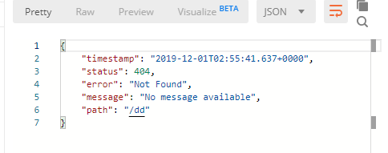
浏览器发送的请求头中优先接受text/html,表明优先接受html页面
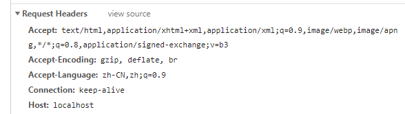
postman发送的请求头中无优先级
相关自动配置在AutoConfigure下web中的error中配置
原理参照ErrorMvcAutoConfiguration中的错误自动配置
给容器中添加了以下组件
DefaultErrorAttributes
- 作用：帮我们在页面共享信息

- 默认去找页面: error/404 error/+错误状态码
- 方法：拼接视图名，若存在模板引擎，就用模板引擎解析返回
- 若模板引擎不可用，则用resolve，在静态资源文件夹下找errorViewName对应的页面 error/404.html
BasicErrorController
- 处理默认的/error请求
- 打开该类，处理两种请求
- 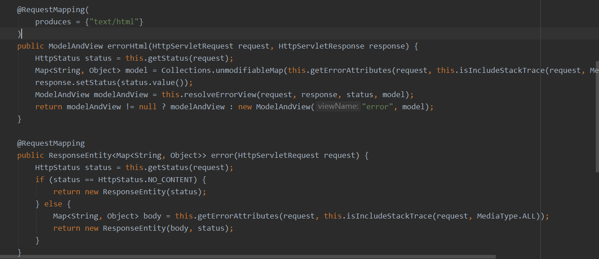
- 其中html返回ModelAndView，可以处理html类型的数据，浏览器发送的请求来到此处理
- 另一个返回的是ResponseEntity，可以处理json类型的数据，其他客户端来到这里进行处理
ErrorMvcAutoConfiguration.ErrorPageCustomizer
- ErrorPageCustomizer将调用ErrorProperties获取配置的error文件目录
- 系统出现错误后来到error请求进行处理；（web.xml注册的错误页面规则）

ErrorMvcAutoConfiguration.PreserveErrorControllerTargetClassPostProcessor
步骤：
一旦系统出现4xx-5xx之类的错误
ErrorPageCustomizer就会生效（定制错误的响应规则）
来到/error请求
被BasicErrorController处理
响应页面
在应对html的请求的方法中，首先拿到一些状态码，一些model数据，返回modelAndView，在resolveError中解析返回去哪个页面为错误页面；包含页面的地址与页面的内容。不再粘贴解析部分代码。
响应页面去哪个页面是由DefaultErrorViewResolver解析得到的
- 解析方法：
- 注册的DefaultErrorViewRsolver解析，查看源码，静态写了一些状态码，客户端4xx,服务端5xx，解析：
为什么浏览器接收的是html页面
2）、定制错误响应：
如何定制错误的页面；
有模板引擎的情况下;error/状态码，在templates下新建文件夹error,建立相应的页面：错误状态码.html。
我们可以使用4xx、5xx作为错误页面的文件名来匹配这种类型的所有错误，精确优先（优先寻找精确的状态码页面）
页面能获取的信息：
- timestamp:时间戳
- status:状态码
- error:错误提示
- exception:异常对象
- message:异常消息
- errors:jsr303数据校验错误
无模板引擎（模板引擎找不到这个错误页面），在静态资源文件下找；
模板引擎和静态资源文件夹下都没有，默认来到SpringBoor的默认空白页面
即在templates下新建error文件夹，里面放上错误代码命名的html（b），即可
定制错误的Json数据；
编写一个错误处理Handler，新建Controller类，使用@ControllerAdvice注解，
使用此方法将捕获服务器产生的异常，然后返回设定的内容。
xxxxxxxxxx1112public class ExceptionHandler{34(一个异常类.class)5public Map<String,Object> handlerException(Exception e){6Map<String,Object> map = new HashMap<>();7map.put("code","状态码");8map.put("message",e.getMessage());9return map;10}11}该方法会设置网页和json访问都返回json数据
将当前错误设置为自适应
让错误控制转发到/error进行自适应效果处理
xxxxxxxxxx1112public class ExceptionHandler{3(一个异常类.class)4public Map<String,Object> handlerException(Exception e){5Map<String,Object> map = new HashMap<>();6map.put("code","状态码");7map.put("message",e.getMessage());8//转发到/error请求9return "forward:/error";10}11}ps:Spring的转发与重定向：在返回的视图名前添加forward: 转发，redirect: 重定向
上述代码存在页面返回为空白的问题，思考SpringBoor 的错误处理流程得知，SpringBoot在处理页面 请求的错误时，会从error请求中取出状态码,其对应的参数名在方法中可查，为javax.servlet.error.status_code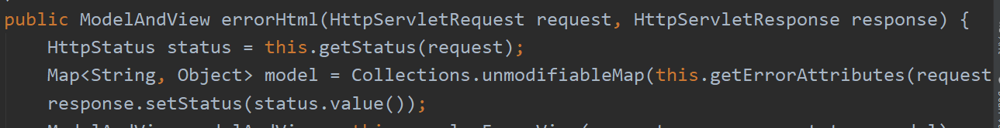
xxxxxxxxxx121protected HttpStatus getStatus(HttpServletRequest request) {2Integer statusCode = (Integer)request.getAttribute("javax.servlet.error.status_code");3if (statusCode == null) {4return HttpStatus.INTERNAL_SERVER_ERROR;5} else {6try {7return HttpStatus.valueOf(statusCode);8} catch (Exception var4) {9return HttpStatus.INTERNAL_SERVER_ERROR;10}11}12}所以我们一定要传入自己的状态码，在请求参数上加javax.servlet.error.status_code的Attribute
改进后的代码如下
xxxxxxxxxx1312public class ExceptionHandler{3(一个异常类.class)4public Map<String,Object> handlerException(Exception e,HttpServletRequest request){5Map<String,Object> map = new HashMap<>();6//传入自己的状态码，这里设置为7777request.setAttribute("javax.servlet.error.status_code",777)8map.put("code","状态码");9map.put("message",e.getMessage());10//转发到/error请求11return "forward:/error";12}13}这样就能来到自己定制的777错误页面
问题：无法携带定制数据
将我们定制的数据携带出去
出现错误后，会来到/error请求，被BasicErrorController处理，响应出去可以获取的数据是由getErrorAttributes得到的（是AbstractErrorController（ErrorController)规定的方法）；
完全编写一个ErrorController的实现类【或者继承AbstractErrorController的子类】放在容器中；
两种返回方法（页面与json)都使用了getErrorAttributes来得到数据,我们可以自己编写一个MyErrorAttributes,继承DefaultErrorAttributes(下面方法位于的类)，重写getErrorAttributes，先调用父类方法，返回父类方法返回的map，也可以在map中添加自己的信息
xxxxxxxxxx81public Map<String, Object> getErrorAttributes(WebRequest webRequest, boolean includeStackTrace) {2Map<String, Object> errorAttributes = new LinkedHashMap();3errorAttributes.put("timestamp", new Date());4this.addStatus(errorAttributes, webRequest);5this.addErrorDetails(errorAttributes, webRequest, includeStackTrace);6this.addPath(errorAttributes, webRequest);7return errorAttributes;8}
自定义
xxxxxxxxxx101public class MyErrorAttributes extends DefultErrorAttributes{3 //返回值的map就是页面和json能获取的所有字段4 5 public Map<String,Object>......{6 Map<String,Object> map=super.getErrorAttributes(....);7 map.put("team","ccc");//个性添加字段8 return map;9 }10}程序异常-->转发/error-->使用ErrorAttributes获取异常值
ErrorAttributes返回值的map就是页面和json能获取的所有字段,该方法有一参数为requestAttributes可以使用此来获取在异常处理时，放在Attribute中的信息。但是在取参数时有两个参数，第一个为Key第二个为scope，相信见源码中，0为request域。
五、配置嵌入式Servlet容器
在之前写web应用时，需要先打包，然后部署在tomcat容器中，
SpringBoot默认使用的是嵌入式Servlet容器（Tomcat）
问题？
嵌入式Servlet容器配置
1、外置的Servlet容器如何定义和修改Servlet容器的相关配置；
1)修改server相关配置(ServerProperties)
xxxxxxxxxx71server.port=80802server.context-path=34#通用的Servlet容器设置5server.xxx6#Tomcat的设置,（属性中有一个为tomcat）7server.tomcat.xxx编写一嵌入式的servlet容器定制器；来修改Servlet容器的配置，两种方式任选一个，是同一个底层原理。
在MvcConfig中添加一个EmbeddedServletContainerCustomer
注册Servlet容器三大组件
传统web应用的目录结构 webapp/WEB-INF/web.xml,在web.xml中注册组件
SpringBoot如何注册？
- ServletRegistrationBean
- FilerRegistrationBean
- ServletListenerRegistrationBean
先编写一个继承HttpServlet的类
添加Bean,返回一个指定的注册Bean，参数为写好的类与映射，完成Servlet注册

实现接口Filter来编写Filter类
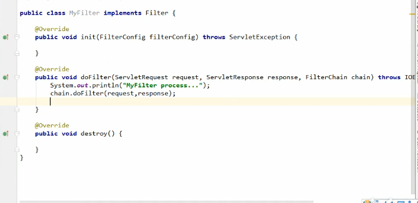
添加filter到容器中
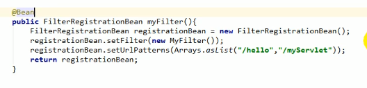
注册ServletContextListener
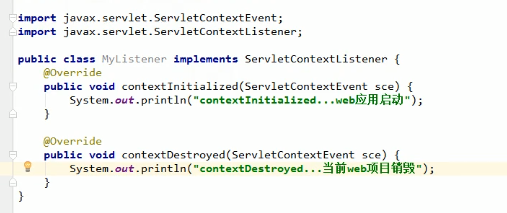
SpringBoot 帮我们启动SpingMvc的时候，自动注册Spring前端控制器；DispatcherServlet通过server.servlet-path来修改SpringMVC前端控制器，默认配置为"/"
使用其他Servlet容器
Jetty(长连接，如聊天)
Undertow(不支持JSP)
SpringBoot支持三个Servlet服务器
tomcat、Jetty、Undertow，默认使用Tomcat
- Web依赖中排除Tomcat
- 引入其他的Servlet容器依赖
嵌入式Servlet容器自动配置原理
自动配置jar,web->EmbeddedServletContainerAutoConfiguration(嵌入式Servlet容器自动配置)
Spring Boot 如何自动配置servlet容器
SpringBoot 2版本相对于1代在这里去掉了对于容器中是否有用户自定义的Servlet工厂的判断，
xxxxxxxxxx171 2 /**3 *判断当前是否引入Tomcat依赖,若引入就加载Tomcat配置4 */5 (6 proxyBeanMethods = false7 )8 ({Tomcat.class, UpgradeProtocol.class})9 public static class TomcatWebServerFactoryCustomizerConfiguration {10 public TomcatWebServerFactoryCustomizerConfiguration() {11 }1213 14 public TomcatWebServerFactoryCustomizer tomcatWebServerFactoryCustomizer(Environment environment, ServerProperties serverProperties) {15 return new TomcatWebServerFactoryCustomizer(environment, serverProperties);16 }17 }Spring Boot是通过检查项目中是否存在相关容器的依赖，然后加载对应的配置，启动对应的Servlet容器。创建对应的工厂对象，加载配置的编码，连接数等等等等参数设置。配置好以后返回并启动
我们对嵌入式容器配置的修改如何生效
- ServerProperties、
- EmbeddedServletContainerCustomer自定的Servlet容器定制器
- ServerProperties实现了EmbeddedServletContainerCustomer接口，本质也是Servlet容器定制器。
所以必为EmbeddedServletContainerCustomer：定制器帮我们修改了Servlet容器的配置
步骤：
- SpringBoot根据导入的依赖情况，给容器中添加相应的EmbeddedServletContainerFactory
- 容器中某个组件要创建对象就会惊动后置处理器：EmbeddedServletContainerCustomizerBeanPostProcessor
- 只要是嵌入式的Servlet容器工厂，后置处理器就工作
- 后置处理器，从容器中获取所有的EmbeddedServletContainerCustomizer调用定制器的定制方法
嵌入式Servlet容器启动原理
什么时候创建嵌入式的Servlet容器工厂？什么时候获取嵌入式的Servlet容器启动Tomcat
获取嵌入式Servlet容器工厂，启动运行run方法
refreshContext(context);SpringBoot刷新IOC容器（创建IOC容器对象，并舒适化容器，创建容器中的每一个组件）；有判断web应用，不同的容器
onRefresh();web的ioc容器重写了onRefresh方法
webioc容器会创建嵌入式的Servlet容器；createEmbeddedServletContainer();
获取嵌入式Servlet容器工厂：
- 从ioc容器中获取EmbeddedServletContainerFactory组件；
- TomcatEmbeddedServletContainerFactory创建对象，后置处理器识别到这个对象，就获取所有的定制器来定制Servlet容器的相关配置；
使用容器工厂获取嵌入式的Servlet容器工厂获取一个工厂
嵌入式容器创建对象并启动Servlet容器
先启动Servlet容器，再将ioc容器中剩下的没有创建出的对象获取出来
使用外置的Servlet容器
嵌入式Servlet：打为可执行jar
优点：简单、便携
缺点：默认不支持JSP、优化定制比较复杂（使用定制器【ServerProerties、自定义EmbeddedServletContainerCustomizer】,自己编写嵌入式Servlet容器的创建工厂）
外置的Servlet容器：外面安装Tomcat——应用war包的方式打包
- 新建SpringBoot项目，packaging选择war
- 右上角项目结构在modules中修改，选择web右侧有web Resource Directories web资源目录，选择ok就能创建，上侧有一个Deployment Descriptors部署描述（生成web.xml文件），其他与SSM相似
六、数据访问
1、jdbc配置
idea新建项目勾选jdbc,mysql,web
idea生成的项目自动携带了jdbc的stater和jdbc依赖
配置properties
spring.datasource下进行

使用测试类查看数据源信息

效果：
- 默认使用org.apache.tomcat.jdbc.pool.DataSource作为数据源（1版本），2版本默认使用com.zaxxer.hikari.HikarDataSource作为数据源
- 数据源的相关配置都在DataSourceProperties里面
自动配置原理：
位置在autoconfigure中的jdbc包中
参考DataSourceConfiguration，根据配置创建数据源，默认使用Tomcat(2版本使用hikari)连接池；可以使用spring.datasource.type指定自定义的数据类型
SpringBoot默认支持 Tomcat，hikari，Basic三种DataSource
自定义数据源类型，builder设计模式

DataSourceInitializer: ApplicationListener
作用：
- runSchemaScripts();运行建表语句
- runDataScript();运行插入数据的sql语句
默认只需要将文件命名：
xxxxxxxxxx11schema-*.sql data-*.sql
失败的在配置文件加initialization-mode: always(2版本的改动)
若想配置自己定义的名字，在配置文件中datasource下配置schema,查看关联的properties可以得知改项接收的为list，使用yml的list写法即可 如：- classpath:department.sql
2.使用druid
视频已经过时，就自己找来的文档
Druid的简介
Druid首先是一个数据库连接池。Druid是目前最好的数据库连接池，在功能、性能、扩展性方面，都超过其他数据库连接池，包括DBCP、C3P0、BoneCP、Proxool、JBoss DataSource。Druid已经在阿里巴巴部署了超过600个应用，经过一年多生产环境大规模部署的严苛考验。Druid是阿里巴巴开发的号称为监控而生的数据库连接池！
同时Druid不仅仅是一个数据库连接池，它包括四个部分：
xxxxxxxxxx71Druid是一个JDBC组件，它包括三个部分：23基于Filter－Chain模式的插件体系。45DruidDataSource 高效可管理的数据库连接池。67SQLParser
Druid的功能
1、替换DBCP和C3P0。Druid提供了一个高效、功能强大、可扩展性好的数据库连接池。
2、可以监控数据库访问性能，Druid内置提供了一个功能强大的StatFilter插件，能够详细统计SQL的执行性能，这对于线上分析数据库访问性能有帮助。
3、数据库密码加密。直接把数据库密码写在配置文件中，这是不好的行为，容易导致安全问题。DruidDruiver和DruidDataSource都支持PasswordCallback。
4、SQL执行日志，Druid提供了不同的LogFilter，能够支持Common-Logging、Log4j和JdkLog，你可以按需要选择相应的LogFilter，监控你应用的数据库访问情况。
5、扩展JDBC，如果你要对JDBC层有编程的需求，可以通过Druid提供的Filter机制，很方便编写JDBC层的扩展插件。
所以Druid可以：
1、充当数据库连接池。 2、可以监控数据库访问性能 3、获得SQL执行日志
配置Druid
新的Druid推出了stater进行配置，操作很方便
引入stater
xxxxxxxxxx51 <dependency>2 <groupId>com.alibaba</groupId>3 <artifactId>druid-spring-boot-starter</artifactId>4 <version>1.1.10</version>5 </dependency>在配置文件进行配置
xxxxxxxxxx521spring2 application3 namespringboot-test-exam14 datasource5 # 使用阿里的Druid连接池6 typecom.alibaba.druid.pool.DruidDataSource7 driver-class-namecom.mysql.jdbc.Driver8 # 填写你数据库的url、登录名、密码和数据库名9 urljdbcmysql//localhost3306/databaseName?useSSL=false&characterEncoding=utf810 usernameroot11 passwordroot12 druid13 # 连接池的配置信息14 # 初始化大小，最小，最大15 initial-size516 min-idle517 maxActive2018 # 配置获取连接等待超时的时间19 maxWait6000020 # 配置间隔多久才进行一次检测，检测需要关闭的空闲连接，单位是毫秒21 timeBetweenEvictionRunsMillis6000022 # 配置一个连接在池中最小生存的时间，单位是毫秒23 minEvictableIdleTimeMillis30000024 validationQuerySELECT 125 testWhileIdletrue26 testOnBorrowfalse27 testOnReturnfalse28 # 打开PSCache，并且指定每个连接上PSCache的大小29 poolPreparedStatementstrue30 maxPoolPreparedStatementPerConnectionSize2031 # 配置监控统计拦截的filters，去掉后监控界面sql无法统计，'wall'用于防火墙32 filtersstat,wall,slf4j33 # 通过connectProperties属性来打开mergeSql功能；慢SQL记录34 connectionPropertiesdruid.stat.mergeSql\=true;druid.stat.slowSqlMillis\=500035 # 配置DruidStatFilter36 web-stat-filter37 enabledtrue38 url-pattern"/*"39 exclusions"*.js,*.gif,*.jpg,*.bmp,*.png,*.css,*.ico,/druid/*"40 # 配置DruidStatViewServlet41 stat-view-servlet42 url-pattern"/druid/*"43 # IP白名单(没有配置或者为空，则允许所有访问)44 allow127.0.0.1,192.168.163.145 # IP黑名单 (存在共同时，deny优先于allow)46 deny192.168.1.7347 # 禁用HTML页面上的“Reset All”功能48 reset-enablefalse49 # 登录名50 login-usernameadmin51 # 登录密码52 login-password1234563、整合Jpa
Jpa(Spring Data Jpa)一款hibernate发展来的ORM框架，全自动持久层操作，不用书写sql。
4、整合MyBatis
MyBatis原理
一、Mybatis工作原理图
mybatis 原理图如下所示：
二、工作原理解析
mybatis应用程序通过SqlSessionFactoryBuilder从mybatis-config.xml配置文件（也可以用Java文件配置的方式，需要添加@Configuration）来构建SqlSessionFactory（SqlSessionFactory是线程安全的）；
然后，SqlSessionFactory的实例直接开启一个SqlSession，再通过SqlSession实例获得Mapper对象并运行Mapper映射的SQL语句，完成对数据库的CRUD和事务提交，之后关闭SqlSession。
说明：SqlSession是单线程对象，因为它是非线程安全的，是持久化操作的独享对象，类似jdbc中的Connection，底层就封装了jdbc连接。
详细流程如下：
1、加载mybatis全局配置文件（数据源、mapper映射文件等），解析配置文件，MyBatis基于XML配置文件生成Configuration，和一个个MappedStatement（包括了参数映射配置、动态SQL语句、结果映射配置），其对应着<select | update | delete | insert>标签项。
2、SqlSessionFactoryBuilder通过Configuration对象生成SqlSessionFactory，用来开启SqlSession。
3、SqlSession对象完成和数据库的交互： a、用户程序调用mybatis接口层api（即Mapper接口中的方法） b、SqlSession通过调用api的Statement ID找到对应的MappedStatement对象 c、通过Executor（负责动态SQL的生成和查询缓存的维护）将MappedStatement对象进行解析，sql参数转化、动态sql拼接，生成jdbc Statement对象 d、JDBC执行sql。
e、借助MappedStatement中的结果映射关系，将返回结果转化成HashMap、JavaBean等存储结构并返回。
mybatis层次图：
配置
MyBatis也有SpringBoot的stater可以使用，很方便
引入依赖
xxxxxxxxxx51<dependency>2 <groupId>org.mybatis.spring.boot</groupId>3 <artifactId>mybatis-spring-boot-starter</artifactId>4 <version>1.2.0</version> 5</dependency>在启动类上注解——增加MapperScan注解路径执行mapper接口路径
注意这里是dao层接口的位置，不是xml文件的位置
xxxxxxxxxx121import org.mybatis.spring.annotation.MapperScan;2import org.springframework.boot.SpringApplication;3import org.springframework.boot.autoconfigure.SpringBootApplication;4 5("com.sun.houses.mapper")7public class HousesApplication {8 9 public static void main(String[] args) {10 SpringApplication.run(HousesApplication.class, args);11 }12}或者可以在接口上注解@Mapper，个人觉得很繁琐
配置文件进行配置
xxxxxxxxxx91mybatis2 #实体类位置，可以直接进行映射3 type-aliases-packagecom.jirath.jirathblog2.pojo,com.jirath.jirathblog2.query4 #mybatis-mapper xml文件位置5 mapper-locationsclasspathmybatis-mapping/*Mapper.xml6 #MyBatis配置7 configuration8 #开启驼峰，配置有很多，不在多写，使用默认9 map-underscore-to-camel-casetrue
七、创建SpringBootApplication
为启动main方法打上断点进行调试
启动流程：
创建SpringApplication对象
- 调用initialize方法，2.x已经弃用，在构造方法中完成


- 保存主配置类
- 判断是否web应用
- 从类路径下找META-INF /spring.factories 配置的所有ApplicationContextInitalizer然后保存
- 从类路径下找META-INF /spring.factories 配置的所有ApplicationContextListener然后保存
- 多个配置类中找main方法所在的配置类
- 调用initialize方法，2.x已经弃用，在构造方法中完成
执行run方法
- 创建StopWatch（开始、停止的监听）
- 声明ioc容器（ConfigurableApplicationContext）
- ConfigureHeadlessProperty()跟awt相关操作
- 获取SpringApplicationRunListener
- 回调所有的获取的SpringApplicationRunListener的starting方法
- 封装命令行参数
- 准备环境
- 配置环境
- 回调所有的listener的prepare environment方法
- Banner 打印Banner
- 创建ioc容器
- 准备上下文，回调之前准备的ApplicationContextInitalizer的initalizer方法
- 回调listener的contextPrepare方法，等所有的Listener都准备好了以后回调ContextLoaded
- 刷新容器，web版加入tomcat容器；spring注解版（会扫描到配置注解）
- 从ioc容器中获取所有的ApplicationRunner回调然后CommandLineRunner进行回调
- 所有的SpringApplicationRunListener回调finish方法
- 整个应用启动完成后返回ioc容器

八、缓存
- 系统中高频使用的数据，存储在动态缓存区中，不需要打开数据库进行操作，缓存中没有的打开数据库，可以再保存在缓存中。
- 临时信息如验证码等等
一、统一的缓存开发规范：J2EE——JSR107
Java Cache定义了五个接口
- CachingProvider 定义了创建、配置、获取、管理和控制多个CacheManager。一个应用可以在运行期访问多个CachingProvider
- CacheManage 定义了创建、配置、获取、管理和控制多个唯一命名的Cache,Cache存在于CacheManager上下文。一个CacheManager仅被一个CacheProvider拥有
- Cache 一个类似Map的数据结构并临时存储以Key为索引的值，一个Cache仅被一个CacheManager拥有
- Entry 一个存储在Cache中的key-value对
- Expiry 一个条目的有效期，可以通过ExpiryPolicy设置。

二、配置
使用JSR107需要导入依赖
xxxxxxxxxx41<dependency>2 <groupId>javax.cache</groupId>3 <artifactId>cache-api</artifactId>4</dependency>
八、Docker
基础


使用Docker的步骤
- 安装Docker
- 去Docker仓库中找到软件对应的镜像
- 使用Docker运行这个镜像，这个镜像就会产生一个Docker容器
- 对容器的启动停止就是对软件的启动停止
安装Docker
步骤：
检查内核版本，3.10及以上
- uname -r
安装docker
- yum install docker